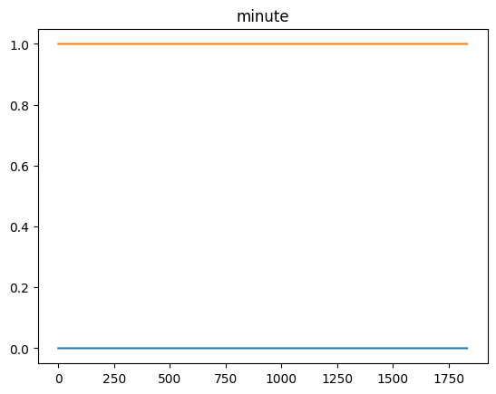
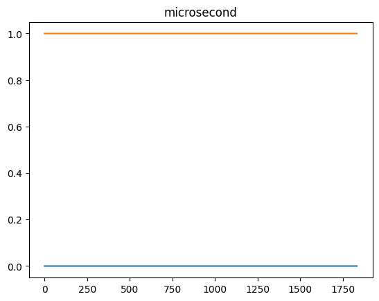
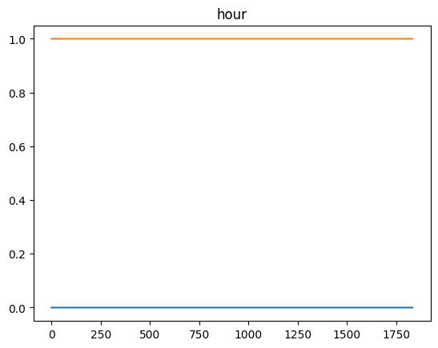
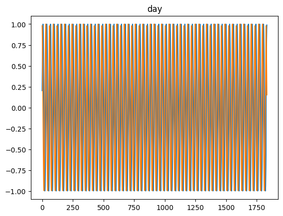
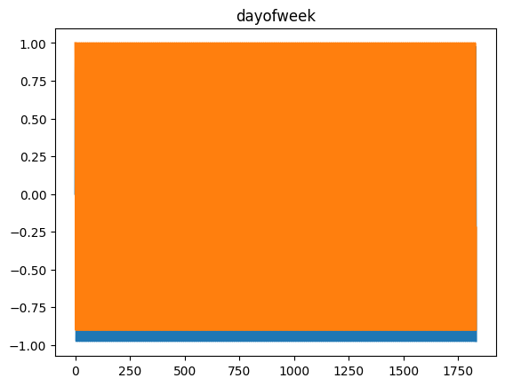
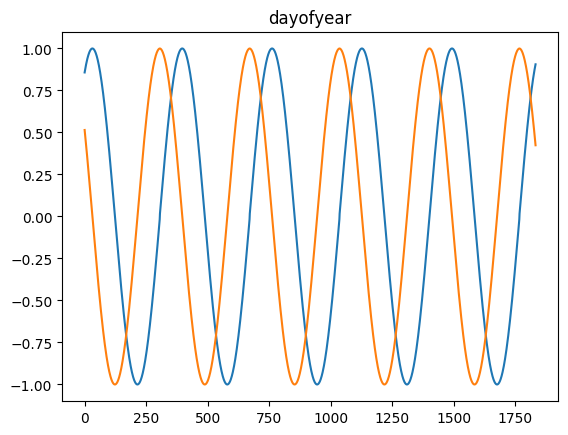
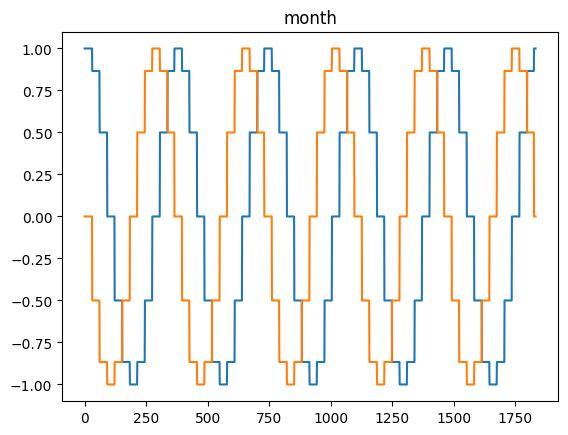
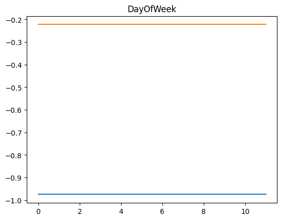
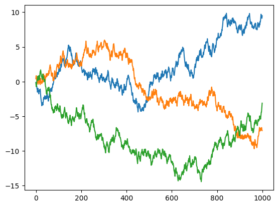

data = np.arange(20).reshape(-1,1).repeat(3, 1) * np.array([1, 10, 100])
df = pd.DataFrame(data, columns=['feat_1', 'feat_2', 'feat_3'])
df.head()| feat_1 | feat_2 | feat_3 | |
|---|---|---|---|
| 0 | 0 | 0 | 0 |
| 1 | 1 | 10 | 100 |
| 2 | 2 | 20 | 200 |
| 3 | 3 | 30 | 300 |
| 4 | 4 | 40 | 400 |
Functions required to prepare X (and y) from a pandas dataframe.
def apply_sliding_window(
data, # and array-like object with the input data
window_len:int | list, # sliding window length. When using a list, use negative numbers and 0.
horizon:int | list=0, # horizon
x_vars:int | list=None, # indices of the independent variables
y_vars:int | list=None, # indices of the dependent variables (target). [] means no y will be created. None means all variables.
):
Applies a sliding window on an array-like input to generate a 3d X (and optionally y)
def prepare_sel_vars_and_steps(
sel_vars:NoneType=None, sel_steps:NoneType=None, idxs:bool=False
):
Call self as a function.
def prepare_idxs(
o, shape:NoneType=None
):
Call self as a function.
data = np.arange(20).reshape(-1,1).repeat(3, 1) * np.array([1, 10, 100])
df = pd.DataFrame(data, columns=['feat_1', 'feat_2', 'feat_3'])
df.head()| feat_1 | feat_2 | feat_3 | |
|---|---|---|---|
| 0 | 0 | 0 | 0 |
| 1 | 1 | 10 | 100 |
| 2 | 2 | 20 | 200 |
| 3 | 3 | 30 | 300 |
| 4 | 4 | 40 | 400 |
window_len = 8
horizon = 1
x_vars = None
y_vars = None
X, y = apply_sliding_window(data, window_len, horizon=horizon, x_vars=x_vars, y_vars=y_vars)
print(np.shares_memory(X, data))
print(np.shares_memory(y, data))
print(X.shape, y.shape)
test_eq(X.shape, (len(df) - (window_len - 1 + horizon), df.shape[1], window_len))
test_eq(y.shape, (len(df) - (window_len - 1 + horizon), df.shape[1]))
X[0], y[0]True
True
(12, 3, 8) (12, 3)(array([[ 0, 1, 2, 3, 4, 5, 6, 7],
[ 0, 10, 20, 30, 40, 50, 60, 70],
[ 0, 100, 200, 300, 400, 500, 600, 700]]),
array([ 8, 80, 800]))window_len = 8
horizon = 1
x_vars = None
y_vars = 0
X, y = apply_sliding_window(df, window_len, horizon=horizon, x_vars=x_vars, y_vars=y_vars)
print(np.shares_memory(X, df))
print(np.shares_memory(y, df))
print(X.shape, y.shape)
test_eq(X.shape, (len(df) - (window_len - 1 + horizon), df.shape[1], window_len))
test_eq(y.shape, (len(df) - (window_len - 1 + horizon),))
X[0], y[0]True
True
(12, 3, 8) (12,)(array([[ 0, 1, 2, 3, 4, 5, 6, 7],
[ 0, 10, 20, 30, 40, 50, 60, 70],
[ 0, 100, 200, 300, 400, 500, 600, 700]]),
np.int64(8))window_len = 8
horizon = [1, 2]
x_vars = 0
y_vars = [1, 2]
X, y = apply_sliding_window(df, window_len, horizon=horizon, x_vars=x_vars, y_vars=y_vars)
print(np.shares_memory(X, df))
print(np.shares_memory(y, df))
print(X.shape, y.shape)
test_eq(X.shape, (len(df) - (window_len - 1 + max(horizon)), 1, window_len))
test_eq(y.shape, (len(df) - (window_len - 1 + max(horizon)), len(y_vars), len(horizon)))
X[0], y[0]True
False
(11, 1, 8) (11, 2, 2)(array([[0, 1, 2, 3, 4, 5, 6, 7]]),
array([[ 80, 90],
[800, 900]]))window_len = [-4, -2, -1, 0]
horizon = [1, 2, 4]
x_vars = 0
y_vars = [1, 2]
X, y = apply_sliding_window(df, window_len, horizon=horizon, x_vars=x_vars, y_vars=y_vars)
print(np.shares_memory(X, df))
print(np.shares_memory(y, df))
print(X.shape, y.shape)
test_eq(X.shape, (12, 1, 4))
test_eq(y.shape, (12, 2, 3))
X[0], y[0]False
False
(12, 1, 4) (12, 2, 3)(array([[0, 2, 3, 4]]),
array([[ 50, 60, 80],
[500, 600, 800]]))
def df2Xy(
df, sample_col:NoneType=None, feat_col:NoneType=None, data_cols:NoneType=None, target_col:NoneType=None,
steps_in_rows:bool=False, to3d:bool=True, splits:NoneType=None, sort_by:NoneType=None, ascending:bool=True,
y_func:NoneType=None, return_names:bool=False
):
This function allows you to transform a pandas dataframe into X and y numpy arrays that can be used to create a TSDataset. sample_col: column that uniquely identifies each sample. feat_col: used for multivariate datasets. It indicates which is the column that indicates the feature by row. data_col: indicates ths column/s where the data is located. If None, it means all columns (except the sample_col, feat_col, and target_col) target_col: indicates the column/s where the target is. steps_in_rows: flag to indicate if each step is in a different row or in a different column (default). to3d: turns X to 3d (including univariate time series) sort_by: this is used to pass any colum/s that are needed to sort the steps in the sequence. If you pass a sample_col and/ or feat_col these will be automatically used before the sort_by column/s, and you don’t need to add them to the sort_by column/s list. y_func: function used to calculate y for each sample (and target_col) return_names: flag to return the names of the columns from where X was generated
def split_Xy(
X, y:NoneType=None, splits:NoneType=None
):
Call self as a function.
df = pd.DataFrame()
df['sample_id'] = np.array([1,1,1,2,2,2,3,3,3])
df['var1'] = df['sample_id'] * 10 + df.index.values
df['var2'] = df['sample_id'] * 100 + df.index.values
df| sample_id | var1 | var2 | |
|---|---|---|---|
| 0 | 1 | 10 | 100 |
| 1 | 1 | 11 | 101 |
| 2 | 1 | 12 | 102 |
| 3 | 2 | 23 | 203 |
| 4 | 2 | 24 | 204 |
| 5 | 2 | 25 | 205 |
| 6 | 3 | 36 | 306 |
| 7 | 3 | 37 | 307 |
| 8 | 3 | 38 | 308 |
X_df, y_df = df2Xy(df, sample_col='sample_id', steps_in_rows=True)
test_eq(X_df[0], np.array([[10, 11, 12], [100, 101, 102]]))n_samples = 1_000
n_rows = 10_000
sample_ids = np.arange(n_samples).repeat(n_rows//n_samples).reshape(-1,1)
feat_ids = np.tile(np.arange(n_rows // n_samples), n_samples).reshape(-1,1)
cont = np.random.randn(n_rows, 6)
ind_cat = np.random.randint(0, 3, (n_rows, 1))
target = np.array([0,1,2])[ind_cat]
ind_cat2 = np.random.randint(0, 3, (n_rows, 1))
target2 = np.array([100,200,300])[ind_cat2]
data = np.concatenate([sample_ids, feat_ids, cont, target, target], -1)
columns = ['sample_id', 'feat_id'] + (np.arange(6) + 1).astype(str).tolist() + ['target'] + ['target2']
df = pd.DataFrame(data, columns=columns)
idx = random_choice(np.arange(len(df)), len(df), False)
new_dtypes = {'sample_id':np.int32, 'feat_id':np.int32, '1':np.float32, '2':np.float32, '3':np.float32, '4':np.float32, '5':np.float32, '6':np.float32}
df = df.astype(dtype=new_dtypes)
df = df.loc[idx].reset_index(drop=True)
df| sample_id | feat_id | 1 | 2 | 3 | 4 | 5 | 6 | target | target2 | |
|---|---|---|---|---|---|---|---|---|---|---|
| 0 | 974 | 9 | -1.020225 | 0.490861 | -0.189539 | -1.025940 | -1.371664 | -0.168857 | 2.0 | 2.0 |
| 1 | 876 | 0 | 0.941679 | 0.216880 | -1.062914 | 0.040360 | -0.237583 | -0.975293 | 0.0 | 0.0 |
| 2 | 307 | 5 | 2.805680 | -1.370852 | -0.135271 | -1.131725 | -2.353741 | -0.527359 | 0.0 | 0.0 |
| 3 | 374 | 6 | -1.328668 | 0.874001 | 2.293857 | 1.701095 | -1.155008 | 0.214372 | 0.0 | 0.0 |
| 4 | 44 | 3 | -1.210909 | 1.001880 | 0.671870 | 1.175491 | -1.450532 | -0.321712 | 1.0 | 1.0 |
| ... | ... | ... | ... | ... | ... | ... | ... | ... | ... | ... |
| 9995 | 821 | 6 | 0.086783 | -0.605714 | 1.332561 | 0.541426 | -0.297833 | 0.722690 | 1.0 | 1.0 |
| 9996 | 284 | 3 | 0.733117 | 0.926012 | -0.196063 | 0.341643 | -0.942909 | 1.654405 | 0.0 | 0.0 |
| 9997 | 858 | 6 | -0.951218 | -1.272363 | -1.855388 | 0.243799 | 0.067996 | 1.196931 | 1.0 | 1.0 |
| 9998 | 58 | 6 | 1.467693 | -1.061652 | -0.588058 | -1.533506 | 0.107606 | 1.167752 | 0.0 | 0.0 |
| 9999 | 619 | 4 | 0.668199 | -1.728383 | -0.041866 | -1.362354 | -0.021774 | -0.332942 | 0.0 | 0.0 |
10000 rows × 10 columns
from scipy.stats import modedef y_func(o): return mode(o, axis=1, keepdims=True).mode
X, y = df2xy(df, sample_col='sample_id', feat_col='feat_id', target_col=['target', 'target2'], sort_by=['sample_id', 'feat_id'], y_func=y_func)
test_eq(X.shape, (1000, 10, 6))
test_eq(y.shape, (1000, 2))
rand_idx = np.random.randint(0, np.max(df.sample_id))
sorted_df = df.sort_values(by=['sample_id', 'feat_id'], kind='stable').reset_index(drop=True)
test_eq(X[rand_idx], sorted_df[sorted_df.sample_id == rand_idx][['1', '2', '3', '4', '5', '6']].values)
test_eq(np.squeeze(mode(sorted_df[sorted_df.sample_id == rand_idx][['target', 'target2']].values).mode), y[rand_idx])# Univariate
from io import StringIOTESTDATA = StringIO("""sample_id;value_0;value_1;target
rob;2;3;0
alice;6;7;1
eve;11;12;2
""")
df = pd.read_csv(TESTDATA, sep=";")
display(df)
X, y = df2Xy(df, sample_col='sample_id', target_col='target', data_cols=['value_0', 'value_1'], sort_by='sample_id')
test_eq(X.shape, (3, 1, 2))
test_eq(y.shape, (3,))
X, y| sample_id | value_0 | value_1 | target | |
|---|---|---|---|---|
| 0 | rob | 2 | 3 | 0 |
| 1 | alice | 6 | 7 | 1 |
| 2 | eve | 11 | 12 | 2 |
(array([[[ 6, 7]],
[[11, 12]],
[[ 2, 3]]]),
array([1, 2, 0]))# Univariate
TESTDATA = StringIO("""sample_id;timestep;values;target
rob;1;2;0
alice;1;6;1
eve;1;11;2
rob;2;3;0
alice;2;7;1
eve;2;12;2
""")
df = pd.read_csv(TESTDATA, sep=";")
display(df)
def y_func(o): return mode(o, axis=1).mode
X, y = df2xy(df, sample_col='sample_id', target_col='target', data_cols=['values'], sort_by='timestep', to3d=True, y_func=y_func)
test_eq(X.shape, (3, 1, 2))
test_eq(y.shape, (3, ))
print(X, y)| sample_id | timestep | values | target | |
|---|---|---|---|---|
| 0 | rob | 1 | 2 | 0 |
| 1 | alice | 1 | 6 | 1 |
| 2 | eve | 1 | 11 | 2 |
| 3 | rob | 2 | 3 | 0 |
| 4 | alice | 2 | 7 | 1 |
| 5 | eve | 2 | 12 | 2 |
[[[ 6 7]]
[[11 12]]
[[ 2 3]]] [1 2 0]# Multivariate
TESTDATA = StringIO("""sample_id;trait;value_0;value_1;target
rob;green;2;3;0
rob;yellow;3;4;0
rob;blue;4;5;0
rob;red;5;6;0
alice;green;6;7;1
alice;yellow;7;8;1
alice;blue;8;9;1
alice;red;9;10;1
eve;yellow;11;12;2
eve;green;10;11;2
eve;blue;12;12;2
eve;red;13;14;2
""")
df = pd.read_csv(TESTDATA, sep=";")
idx = random_choice(len(df), len(df), False)
df = df.iloc[idx]
display(df)
def y_func(o): return mode(o, axis=1).mode
X, y = df2xy(df, sample_col='sample_id', feat_col='trait', target_col='target', data_cols=['value_0', 'value_1'], y_func=y_func)
print(X, y)
test_eq(X.shape, (3, 4, 2))
test_eq(y.shape, (3,))| sample_id | trait | value_0 | value_1 | target | |
|---|---|---|---|---|---|
| 11 | eve | red | 13 | 14 | 2 |
| 5 | alice | yellow | 7 | 8 | 1 |
| 7 | alice | red | 9 | 10 | 1 |
| 6 | alice | blue | 8 | 9 | 1 |
| 3 | rob | red | 5 | 6 | 0 |
| 9 | eve | green | 10 | 11 | 2 |
| 1 | rob | yellow | 3 | 4 | 0 |
| 4 | alice | green | 6 | 7 | 1 |
| 8 | eve | yellow | 11 | 12 | 2 |
| 10 | eve | blue | 12 | 12 | 2 |
| 0 | rob | green | 2 | 3 | 0 |
| 2 | rob | blue | 4 | 5 | 0 |
[[[ 8 9]
[ 6 7]
[ 9 10]
[ 7 8]]
[[12 12]
[10 11]
[13 14]
[11 12]]
[[ 4 5]
[ 2 3]
[ 5 6]
[ 3 4]]] [1 2 0]# Multivariate, multi-label
TESTDATA = StringIO("""sample_id;trait;value_0;value_1;target1;target2
rob;green;2;3;0;0
rob;yellow;3;4;0;0
rob;blue;4;5;0;0
rob;red;5;6;0;0
alice;green;6;7;1;0
alice;yellow;7;8;1;0
alice;blue;8;9;1;0
alice;red;9;10;1;0
eve;yellow;11;12;2;1
eve;green;10;11;2;1
eve;blue;12;12;2;1
eve;red;13;14;2;1
""")
df = pd.read_csv(TESTDATA, sep=";")
display(df)
def y_func(o): return mode(o, axis=1, keepdims=True).mode
X, y = df2xy(df, sample_col='sample_id', feat_col='trait', target_col=['target1', 'target2'], data_cols=['value_0', 'value_1'], y_func=y_func)
test_eq(X.shape, (3, 4, 2))
test_eq(y.shape, (3, 2))
print(X, y)| sample_id | trait | value_0 | value_1 | target1 | target2 | |
|---|---|---|---|---|---|---|
| 0 | rob | green | 2 | 3 | 0 | 0 |
| 1 | rob | yellow | 3 | 4 | 0 | 0 |
| 2 | rob | blue | 4 | 5 | 0 | 0 |
| 3 | rob | red | 5 | 6 | 0 | 0 |
| 4 | alice | green | 6 | 7 | 1 | 0 |
| 5 | alice | yellow | 7 | 8 | 1 | 0 |
| 6 | alice | blue | 8 | 9 | 1 | 0 |
| 7 | alice | red | 9 | 10 | 1 | 0 |
| 8 | eve | yellow | 11 | 12 | 2 | 1 |
| 9 | eve | green | 10 | 11 | 2 | 1 |
| 10 | eve | blue | 12 | 12 | 2 | 1 |
| 11 | eve | red | 13 | 14 | 2 | 1 |
[[[ 8 9]
[ 6 7]
[ 9 10]
[ 7 8]]
[[12 12]
[10 11]
[13 14]
[11 12]]
[[ 4 5]
[ 2 3]
[ 5 6]
[ 3 4]]] [[1 0]
[2 1]
[0 0]]# Multivariate, unlabeled
TESTDATA = StringIO("""sample_id;trait;value_0;value_1;target
rob;green;2;3;0
rob;yellow;3;4;0
rob;blue;4;5;0
rob;red;5;6;0
alice;green;6;7;1
alice;yellow;7;8;1
alice;blue;8;9;1
alice;red;9;10;1
eve;yellow;11;12;2
eve;green;10;11;2
eve;blue;12;12;2
eve;red;13;14;2
""")
df = pd.read_csv(TESTDATA, sep=";")
idx = random_choice(len(df), len(df), False)
df = df.iloc[idx]
display(df)
def y_func(o): return mode(o, axis=1, keepdims=True).mode
X, y = df2xy(df, sample_col='sample_id', feat_col='trait', data_cols=['value_0', 'value_1'], y_func=y_func)
print(X, y)
test_eq(X.shape, (3, 4, 2))
test_eq(y, None)| sample_id | trait | value_0 | value_1 | target | |
|---|---|---|---|---|---|
| 5 | alice | yellow | 7 | 8 | 1 |
| 6 | alice | blue | 8 | 9 | 1 |
| 11 | eve | red | 13 | 14 | 2 |
| 2 | rob | blue | 4 | 5 | 0 |
| 7 | alice | red | 9 | 10 | 1 |
| 8 | eve | yellow | 11 | 12 | 2 |
| 0 | rob | green | 2 | 3 | 0 |
| 3 | rob | red | 5 | 6 | 0 |
| 9 | eve | green | 10 | 11 | 2 |
| 4 | alice | green | 6 | 7 | 1 |
| 1 | rob | yellow | 3 | 4 | 0 |
| 10 | eve | blue | 12 | 12 | 2 |
[[[ 8 9]
[ 6 7]
[ 9 10]
[ 7 8]]
[[12 12]
[10 11]
[13 14]
[11 12]]
[[ 4 5]
[ 2 3]
[ 5 6]
[ 3 4]]] NoneTESTDATA = StringIO("""sample_id;trait;timestep;values;target
rob;green;1;2;0
rob;yellow;1;3;0
rob;blue;1;4;0
rob;red;1;5;0
alice;green;1;6;1
alice;yellow;1;7;1
alice;blue;1;8;1
alice;red;1;9;1
eve;yellow;1;11;2
eve;green;1;10;2
eve;blue;1;12;2
eve;red;1;13;2
rob;green;2;3;0
rob;yellow;2;4;0
rob;blue;2;5;0
rob;red;2;6;0
alice;green;2;7;1
alice;yellow;2;8;1
alice;blue;2;9;1
alice;red;2;10;1
eve;yellow;2;12;2
eve;green;2;11;2
eve;blue;2;13;2
eve;red;2;14;2
""")
df = pd.read_csv(TESTDATA, sep=";")
display(df)
def y_func(o): return mode(o, axis=1).mode
X, y = df2xy(df, sample_col='sample_id', feat_col='trait', sort_by='timestep', target_col='target', data_cols=['values'], y_func=y_func)
print(X, y)
test_eq(X.shape, (3, 4, 2))
test_eq(y.shape, (3, ))| sample_id | trait | timestep | values | target | |
|---|---|---|---|---|---|
| 0 | rob | green | 1 | 2 | 0 |
| 1 | rob | yellow | 1 | 3 | 0 |
| 2 | rob | blue | 1 | 4 | 0 |
| 3 | rob | red | 1 | 5 | 0 |
| 4 | alice | green | 1 | 6 | 1 |
| 5 | alice | yellow | 1 | 7 | 1 |
| 6 | alice | blue | 1 | 8 | 1 |
| 7 | alice | red | 1 | 9 | 1 |
| 8 | eve | yellow | 1 | 11 | 2 |
| 9 | eve | green | 1 | 10 | 2 |
| 10 | eve | blue | 1 | 12 | 2 |
| 11 | eve | red | 1 | 13 | 2 |
| 12 | rob | green | 2 | 3 | 0 |
| 13 | rob | yellow | 2 | 4 | 0 |
| 14 | rob | blue | 2 | 5 | 0 |
| 15 | rob | red | 2 | 6 | 0 |
| 16 | alice | green | 2 | 7 | 1 |
| 17 | alice | yellow | 2 | 8 | 1 |
| 18 | alice | blue | 2 | 9 | 1 |
| 19 | alice | red | 2 | 10 | 1 |
| 20 | eve | yellow | 2 | 12 | 2 |
| 21 | eve | green | 2 | 11 | 2 |
| 22 | eve | blue | 2 | 13 | 2 |
| 23 | eve | red | 2 | 14 | 2 |
[[[ 8 9]
[ 6 7]
[ 9 10]
[ 7 8]]
[[12 13]
[10 11]
[13 14]
[11 12]]
[[ 4 5]
[ 2 3]
[ 5 6]
[ 3 4]]] [1 2 0]
def df2np3d(
df, groupby, data_cols:NoneType=None
):
Transforms a df (with the same number of rows per group in groupby) to a 3d ndarray
user = np.array([1,2]).repeat(4).reshape(-1,1)
val = np.random.rand(8, 3)
data = np.concatenate([user, val], axis=-1)
df = pd.DataFrame(data, columns=['user', 'x1', 'x2', 'x3'])
test_eq(df2np3d(df, ['user'], ['x1', 'x2', 'x3']).shape, (2, 3, 4))
def add_missing_value_cols(
df, cols:NoneType=None, dtype:type=float, fill_value:NoneType=None
):
Call self as a function.
data = np.random.randn(10, 2)
mask = data > .8
data[mask] = np.nan
df = pd.DataFrame(data, columns=['A', 'B'])
df = add_missing_value_cols(df, cols=None, dtype=float)
test_eq(df['A'].isnull().sum(), df['missing_A'].sum())
test_eq(df['B'].isnull().sum(), df['missing_B'].sum())
df| A | B | missing_A | missing_B | |
|---|---|---|---|---|
| 0 | -0.221109 | -0.252389 | 0.0 | 0.0 |
| 1 | -1.417620 | 0.100183 | 0.0 | 0.0 |
| 2 | 0.295520 | NaN | 0.0 | 1.0 |
| 3 | -0.461779 | -1.010740 | 0.0 | 0.0 |
| 4 | NaN | 0.440123 | 1.0 | 0.0 |
| 5 | -0.324770 | -0.407949 | 0.0 | 0.0 |
| 6 | 0.006966 | -0.379294 | 0.0 | 0.0 |
| 7 | -0.576478 | 0.550953 | 0.0 | 0.0 |
| 8 | 0.612107 | -0.095469 | 0.0 | 0.0 |
| 9 | -0.317881 | NaN | 0.0 | 1.0 |
def add_missing_timestamps(
df, # pandas DataFrame
datetime_col:NoneType=None, # column that contains the datetime data (without duplicates within groups)
use_index:bool=False, # indicates if the index contains the datetime data
unique_id_cols:NoneType=None, # column used to identify unique_ids
groupby:NoneType=None, # same as unique_id_cols. Will be deprecated. Kept for compatiblity.
fill_value:float=nan, # values that will be insert where missing dates exist. Default:np.nan
range_by_group:bool=True, # if True, dates will be filled between min and max dates for each group. Otherwise, between the min and max dates in the df.
start_date:NoneType=None, # start date to fill in missing dates (same for all unique_ids)
end_date:NoneType=None, # end date to fill in missing dates (same for all unique_ids)
freq:NoneType=None, # frequency used to fill in the missing datetime
):
Call self as a function.
# Filling dates between min and max dates
dates = pd.date_range('2021-05-01', '2021-05-07')
date_df = pd.DataFrame({'date': dates, 'feature1': np.random.rand(len(dates)), 'feature2':
np.random.rand(len(dates))})
date_df_with_missing_dates = date_df.drop([1,3]).reset_index(drop=True)
date_df_with_missing_dates| date | feature1 | feature2 | |
|---|---|---|---|
| 0 | 2021-05-01 | 0.835039 | 0.308269 |
| 1 | 2021-05-03 | 0.898825 | 0.190682 |
| 2 | 2021-05-05 | 0.063644 | 0.525019 |
| 3 | 2021-05-06 | 0.484979 | 0.994566 |
| 4 | 2021-05-07 | 0.104824 | 0.831195 |
# No groups
# Filling dates between min and max dates
expected_output_df = date_df.copy()
expected_output_df.loc[[1,3], ['feature1', 'feature2']] = np.nan
display(expected_output_df)
output_df = add_missing_timestamps(date_df_with_missing_dates.copy(),
'date',
unique_id_cols=None,
fill_value=np.nan,
range_by_group=False)
test_eq(output_df, expected_output_df)| date | feature1 | feature2 | |
|---|---|---|---|
| 0 | 2021-05-01 | 0.835039 | 0.308269 |
| 1 | 2021-05-02 | NaN | NaN |
| 2 | 2021-05-03 | 0.898825 | 0.190682 |
| 3 | 2021-05-04 | NaN | NaN |
| 4 | 2021-05-05 | 0.063644 | 0.525019 |
| 5 | 2021-05-06 | 0.484979 | 0.994566 |
| 6 | 2021-05-07 | 0.104824 | 0.831195 |
# Filling dates between min and max dates for each value in groupby column
dates = pd.date_range('2021-05-01', '2021-05-07')
dates = dates.append(dates)
date_df = pd.DataFrame({
'date': dates,
'id': np.array([0]*(len(dates)//2)+[1]*(len(dates)//2)),
'feature1': np.random.rand(len(dates)),
'feature2': np.random.rand(len(dates)),
}).astype({'id': int})
date_df_with_missing_dates = date_df.drop([0,1,3,8,11,13]).reset_index(drop=True)
date_df_with_missing_dates| date | id | feature1 | feature2 | |
|---|---|---|---|---|
| 0 | 2021-05-03 | 0 | 0.175720 | 0.142308 |
| 1 | 2021-05-05 | 0 | 0.986945 | 0.109165 |
| 2 | 2021-05-06 | 0 | 0.487086 | 0.327909 |
| 3 | 2021-05-07 | 0 | 0.008540 | 0.305262 |
| 4 | 2021-05-01 | 1 | 0.820257 | 0.145753 |
| 5 | 2021-05-03 | 1 | 0.508623 | 0.048391 |
| 6 | 2021-05-04 | 1 | 0.034002 | 0.029274 |
| 7 | 2021-05-06 | 1 | 0.412848 | 0.700355 |
# groupby='id', range_by_group=True
expected_output_df = date_df.drop([0,1,13]).reset_index(drop=True)
expected_output_df.loc[[1,6,9], ['feature1', 'feature2']] = np.nan
display(expected_output_df)
output_df = add_missing_timestamps(date_df_with_missing_dates.copy(),
'date',
unique_id_cols='id',
fill_value=np.nan,
range_by_group=True)
test_eq(expected_output_df, output_df)| date | id | feature1 | feature2 | |
|---|---|---|---|---|
| 0 | 2021-05-03 | 0 | 0.175720 | 0.142308 |
| 1 | 2021-05-04 | 0 | NaN | NaN |
| 2 | 2021-05-05 | 0 | 0.986945 | 0.109165 |
| 3 | 2021-05-06 | 0 | 0.487086 | 0.327909 |
| 4 | 2021-05-07 | 0 | 0.008540 | 0.305262 |
| 5 | 2021-05-01 | 1 | 0.820257 | 0.145753 |
| 6 | 2021-05-02 | 1 | NaN | NaN |
| 7 | 2021-05-03 | 1 | 0.508623 | 0.048391 |
| 8 | 2021-05-04 | 1 | 0.034002 | 0.029274 |
| 9 | 2021-05-05 | 1 | NaN | NaN |
| 10 | 2021-05-06 | 1 | 0.412848 | 0.700355 |
# groupby='id', range_by_group=False
expected_output_df = date_df.copy()
expected_output_df.loc[[0,1,3,8,11,13], ['feature1', 'feature2']] = np.nan
display(expected_output_df)
output_df = add_missing_timestamps(date_df_with_missing_dates.copy(),
'date',
unique_id_cols='id',
fill_value=np.nan,
range_by_group=False)
test_eq(expected_output_df, output_df)| date | id | feature1 | feature2 | |
|---|---|---|---|---|
| 0 | 2021-05-01 | 0 | NaN | NaN |
| 1 | 2021-05-02 | 0 | NaN | NaN |
| 2 | 2021-05-03 | 0 | 0.175720 | 0.142308 |
| 3 | 2021-05-04 | 0 | NaN | NaN |
| 4 | 2021-05-05 | 0 | 0.986945 | 0.109165 |
| 5 | 2021-05-06 | 0 | 0.487086 | 0.327909 |
| 6 | 2021-05-07 | 0 | 0.008540 | 0.305262 |
| 7 | 2021-05-01 | 1 | 0.820257 | 0.145753 |
| 8 | 2021-05-02 | 1 | NaN | NaN |
| 9 | 2021-05-03 | 1 | 0.508623 | 0.048391 |
| 10 | 2021-05-04 | 1 | 0.034002 | 0.029274 |
| 11 | 2021-05-05 | 1 | NaN | NaN |
| 12 | 2021-05-06 | 1 | 0.412848 | 0.700355 |
| 13 | 2021-05-07 | 1 | NaN | NaN |
# Filling dates between min and max timestamps
dates = pd.date_range('2021-05-01 000:00', '2021-05-01 20:00', freq='4h')
date_df = pd.DataFrame({'date': dates, 'feature1': np.random.rand(len(dates)), 'feature2':np.random.rand(len(dates))})
date_df_with_missing_dates = date_df.drop([1,3]).reset_index(drop=True)
date_df_with_missing_dates| date | feature1 | feature2 | |
|---|---|---|---|
| 0 | 2021-05-01 00:00:00 | 0.844643 | 0.700726 |
| 1 | 2021-05-01 08:00:00 | 0.296392 | 0.254600 |
| 2 | 2021-05-01 16:00:00 | 0.081671 | 0.856155 |
| 3 | 2021-05-01 20:00:00 | 0.950812 | 0.522507 |
# No groups
expected_output_df = date_df.copy()
expected_output_df.loc[[1,3], ['feature1', 'feature2']] = np.nan
display(expected_output_df)
output_df = add_missing_timestamps(date_df_with_missing_dates.copy(), 'date', groupby=None, fill_value=np.nan, range_by_group=False, freq='4h')
test_eq(output_df, expected_output_df)| date | feature1 | feature2 | |
|---|---|---|---|
| 0 | 2021-05-01 00:00:00 | 0.844643 | 0.700726 |
| 1 | 2021-05-01 04:00:00 | NaN | NaN |
| 2 | 2021-05-01 08:00:00 | 0.296392 | 0.254600 |
| 3 | 2021-05-01 12:00:00 | NaN | NaN |
| 4 | 2021-05-01 16:00:00 | 0.081671 | 0.856155 |
| 5 | 2021-05-01 20:00:00 | 0.950812 | 0.522507 |
# Filling missing values between min and max timestamps for each value in groupby column
dates = pd.date_range('2021-05-01 000:00', '2021-05-01 20:00', freq='4h')
dates = dates.append(dates)
date_df = pd.DataFrame({
'date': dates,
'id': np.array([0]*(len(dates)//2)+[1]*(len(dates)//2)),
'feature1': np.random.rand(len(dates)),
'feature2': np.random.rand(len(dates)),
}).astype({'id': int})
date_df_with_missing_dates = date_df.drop([0,1,3,8,9,11]).reset_index(drop=True)
date_df_with_missing_dates| date | id | feature1 | feature2 | |
|---|---|---|---|---|
| 0 | 2021-05-01 08:00:00 | 0 | 0.983029 | 0.738605 |
| 1 | 2021-05-01 16:00:00 | 0 | 0.868481 | 0.418613 |
| 2 | 2021-05-01 20:00:00 | 0 | 0.891880 | 0.179105 |
| 3 | 2021-05-01 00:00:00 | 1 | 0.063692 | 0.589699 |
| 4 | 2021-05-01 04:00:00 | 1 | 0.094046 | 0.569908 |
| 5 | 2021-05-01 16:00:00 | 1 | 0.945306 | 0.471962 |
# groupby='id', range_by_group=True
expected_output_df = date_df.drop([0,1,11]).reset_index(drop=True)
expected_output_df.loc[[1,6,7], ['feature1', 'feature2']] = np.nan
display(expected_output_df)
output_df = add_missing_timestamps(date_df_with_missing_dates.copy(),
'date',
groupby='id',
fill_value=np.nan,
range_by_group=True,
freq='4h')
test_eq(expected_output_df, output_df)| date | id | feature1 | feature2 | |
|---|---|---|---|---|
| 0 | 2021-05-01 08:00:00 | 0 | 0.983029 | 0.738605 |
| 1 | 2021-05-01 12:00:00 | 0 | NaN | NaN |
| 2 | 2021-05-01 16:00:00 | 0 | 0.868481 | 0.418613 |
| 3 | 2021-05-01 20:00:00 | 0 | 0.891880 | 0.179105 |
| 4 | 2021-05-01 00:00:00 | 1 | 0.063692 | 0.589699 |
| 5 | 2021-05-01 04:00:00 | 1 | 0.094046 | 0.569908 |
| 6 | 2021-05-01 08:00:00 | 1 | NaN | NaN |
| 7 | 2021-05-01 12:00:00 | 1 | NaN | NaN |
| 8 | 2021-05-01 16:00:00 | 1 | 0.945306 | 0.471962 |
# groupby='id', range_by_group=False
expected_output_df = date_df.copy()
expected_output_df.loc[[0,1,3,8,9,11], ['feature1', 'feature2']] = np.nan
display(expected_output_df)
output_df = add_missing_timestamps(date_df_with_missing_dates.copy(),
'date',
groupby='id',
fill_value=np.nan,
range_by_group=False,
freq='4h')
test_eq(expected_output_df, output_df)| date | id | feature1 | feature2 | |
|---|---|---|---|---|
| 0 | 2021-05-01 00:00:00 | 0 | NaN | NaN |
| 1 | 2021-05-01 04:00:00 | 0 | NaN | NaN |
| 2 | 2021-05-01 08:00:00 | 0 | 0.983029 | 0.738605 |
| 3 | 2021-05-01 12:00:00 | 0 | NaN | NaN |
| 4 | 2021-05-01 16:00:00 | 0 | 0.868481 | 0.418613 |
| 5 | 2021-05-01 20:00:00 | 0 | 0.891880 | 0.179105 |
| 6 | 2021-05-01 00:00:00 | 1 | 0.063692 | 0.589699 |
| 7 | 2021-05-01 04:00:00 | 1 | 0.094046 | 0.569908 |
| 8 | 2021-05-01 08:00:00 | 1 | NaN | NaN |
| 9 | 2021-05-01 12:00:00 | 1 | NaN | NaN |
| 10 | 2021-05-01 16:00:00 | 1 | 0.945306 | 0.471962 |
| 11 | 2021-05-01 20:00:00 | 1 | NaN | NaN |
# No groups, with duplicate dates ==> FAILS
dates = pd.date_range('2021-05-01 000:00', '2021-05-01 20:00', freq='4h').values
data = np.zeros((len(dates), 3))
data[:, 0] = dates
data[:, 1] = np.random.rand(len(dates))
data[:, 2] = np.random.rand(len(dates))
cols = ['date', 'feature1', 'feature2']
date_df = pd.DataFrame(data, columns=cols).astype({'date': 'datetime64[ns]', 'feature1': float, 'feature2': float})
date_df_with_missing_dates = date_df.drop([1,3]).reset_index(drop=True)
date_df_with_missing_dates.loc[3, 'date'] = date_df_with_missing_dates.loc[2, 'date']
display(date_df_with_missing_dates)
test_fail(add_missing_timestamps, args=[date_df_with_missing_dates, 'date'], kwargs=dict(groupby=None, fill_value=np.nan, range_by_group=False, freq='4h'), )| date | feature1 | feature2 | |
|---|---|---|---|
| 0 | 2021-05-01 00:00:00 | 0.806107 | 0.668709 |
| 1 | 2021-05-01 08:00:00 | 0.780398 | 0.739771 |
| 2 | 2021-05-01 16:00:00 | 0.923216 | 0.551902 |
| 3 | 2021-05-01 16:00:00 | 0.850076 | 0.905751 |
# groupby='id', range_by_group=True, with duplicate dates ==> FAILS
dates = pd.date_range('2021-05-01 000:00', '2021-05-01 20:00', freq='4h').values
dates = np.concatenate((dates, dates))
data = np.zeros((len(dates), 4))
data[:, 0] = dates
data[:, 1] = np.array([0]*(len(dates)//2)+[1]*(len(dates)//2))
data[:, 2] = np.random.rand(len(dates))
data[:, 3] = np.random.rand(len(dates))
cols = ['date', 'id', 'feature1', 'feature2']
date_df = pd.DataFrame(data, columns=cols).astype({'date': 'datetime64[ns]', 'id': int, 'feature1': float, 'feature2': float})
date_df_with_missing_dates = date_df.drop([0,1,8,9,11]).reset_index(drop=True)
date_df_with_missing_dates.loc[3, 'date'] = date_df_with_missing_dates.loc[2, 'date']
display(date_df_with_missing_dates)
test_fail(add_missing_timestamps, args=[date_df_with_missing_dates, 'date'], kwargs=dict(groupby='id', fill_value=np.nan, range_by_group=True, freq='4h'),
contains='cannot handle a non-unique multi-index!')| date | id | feature1 | feature2 | |
|---|---|---|---|---|
| 0 | 2021-05-01 08:00:00 | 0 | 0.993108 | 0.309150 |
| 1 | 2021-05-01 12:00:00 | 0 | 0.327491 | 0.164923 |
| 2 | 2021-05-01 16:00:00 | 0 | 0.170994 | 0.851456 |
| 3 | 2021-05-01 16:00:00 | 0 | 0.454634 | 0.032915 |
| 4 | 2021-05-01 00:00:00 | 1 | 0.171314 | 0.944603 |
| 5 | 2021-05-01 04:00:00 | 1 | 0.595972 | 0.958672 |
| 6 | 2021-05-01 16:00:00 | 1 | 0.824532 | 0.904686 |
# groupby='id', range_by_group=FALSE, with duplicate dates ==> FAILS
dates = pd.date_range('2021-05-01 000:00', '2021-05-01 20:00', freq='4h').values
dates = np.concatenate((dates, dates))
data = np.zeros((len(dates), 4))
data[:, 0] = dates
data[:, 1] = np.array([0]*(len(dates)//2)+[1]*(len(dates)//2))
data[:, 2] = np.random.rand(len(dates))
data[:, 3] = np.random.rand(len(dates))
cols = ['date', 'id', 'feature1', 'feature2']
date_df = pd.DataFrame(data, columns=cols).astype({'date': 'datetime64[ns]', 'id': int, 'feature1': float, 'feature2': float})
date_df_with_missing_dates = date_df.drop([0,1,8,9,11]).reset_index(drop=True)
date_df_with_missing_dates.loc[3, 'date'] = date_df_with_missing_dates.loc[2, 'date']
display(date_df_with_missing_dates)
test_fail(add_missing_timestamps, args=[date_df_with_missing_dates, 'date'], kwargs=dict(groupby='id', fill_value=np.nan, range_by_group=False, freq='4h'),
contains='cannot handle a non-unique multi-index!')| date | id | feature1 | feature2 | |
|---|---|---|---|---|
| 0 | 2021-05-01 08:00:00 | 0 | 0.855172 | 0.310980 |
| 1 | 2021-05-01 12:00:00 | 0 | 0.850838 | 0.310164 |
| 2 | 2021-05-01 16:00:00 | 0 | 0.361648 | 0.215211 |
| 3 | 2021-05-01 16:00:00 | 0 | 0.193510 | 0.019835 |
| 4 | 2021-05-01 00:00:00 | 1 | 0.554176 | 0.326982 |
| 5 | 2021-05-01 04:00:00 | 1 | 0.091873 | 0.590022 |
| 6 | 2021-05-01 16:00:00 | 1 | 0.349898 | 0.587218 |
def time_encoding(
series, freq, max_val:NoneType=None
):
Transforms a pandas series of dtype datetime64 (of any freq) or DatetimeIndex into 2 float arrays
Available options: microsecond, millisecond, second, minute, hour, day = day_of_month = dayofmonth, day_of_week = weekday = dayofweek, day_of_year = dayofyear, week = week_of_year = weekofyear, month and year
for freq in ['microsecond', 'second', 'minute', 'hour', 'day', 'dayofweek', 'dayofyear', 'month']:
tdf = pd.DataFrame(pd.date_range('2021-03-01', dt.datetime.today()), columns=['date'])
a,b = time_encoding(tdf.date, freq=freq)
plt.plot(a)
plt.plot(b)
plt.title(freq)
plt.show()




for freq in ['microsecond', 'second', 'minute', 'hour', 'day', 'dayofweek', 'dayofyear', 'month']:
dateindex = pd.date_range('2021-03-01', dt.datetime.today())
a,b = time_encoding(dateindex, freq=freq)
plt.plot(a)
plt.plot(b)
plt.title(freq)
plt.show()






dow_sin, dow_cos = time_encoding(date_df['date'], 'dayofweek')
plt.plot(dow_sin)
plt.plot(dow_cos)
plt.title('DayOfWeek')
plt.show()
date_df['dow_sin'] = dow_sin
date_df['dow_cos'] = dow_cos
date_df
| date | id | feature1 | feature2 | dow_sin | dow_cos | |
|---|---|---|---|---|---|---|
| 0 | 2021-05-01 00:00:00 | 0 | 0.805289 | 0.527839 | -0.974928 | -0.222521 |
| 1 | 2021-05-01 04:00:00 | 0 | 0.894198 | 0.390309 | -0.974928 | -0.222521 |
| 2 | 2021-05-01 08:00:00 | 0 | 0.855172 | 0.310980 | -0.974928 | -0.222521 |
| 3 | 2021-05-01 12:00:00 | 0 | 0.850838 | 0.310164 | -0.974928 | -0.222521 |
| 4 | 2021-05-01 16:00:00 | 0 | 0.361648 | 0.215211 | -0.974928 | -0.222521 |
| 5 | 2021-05-01 20:00:00 | 0 | 0.193510 | 0.019835 | -0.974928 | -0.222521 |
| 6 | 2021-05-01 00:00:00 | 1 | 0.554176 | 0.326982 | -0.974928 | -0.222521 |
| 7 | 2021-05-01 04:00:00 | 1 | 0.091873 | 0.590022 | -0.974928 | -0.222521 |
| 8 | 2021-05-01 08:00:00 | 1 | 0.889303 | 0.811452 | -0.974928 | -0.222521 |
| 9 | 2021-05-01 12:00:00 | 1 | 0.108772 | 0.656533 | -0.974928 | -0.222521 |
| 10 | 2021-05-01 16:00:00 | 1 | 0.349898 | 0.587218 | -0.974928 | -0.222521 |
| 11 | 2021-05-01 20:00:00 | 1 | 0.065970 | 0.115706 | -0.974928 | -0.222521 |
def get_gaps(
o:torch.Tensor, forward:bool=True, backward:bool=True, nearest:bool=True, normalize:bool=True
):
Number of sequence steps from previous, to next and/or to nearest real value along the last dimension of 3D arrays or tensors
def nearest_gaps(
o, normalize:bool=True
):
Number of sequence steps to nearest real value along the last dimension of 3D arrays or tensors
def backward_gaps(
o, normalize:bool=True
):
Number of sequence steps to next real value along the last dimension of 3D arrays or tensors
def forward_gaps(
o, normalize:bool=True
):
Number of sequence steps since previous real value along the last dimension of 3D arrays or tensors
t = torch.rand(1, 2, 8)
arr = t.numpy()
t[t <.6] = np.nan
test_ge(nearest_gaps(t).min().item(), 0)
test_ge(nearest_gaps(arr).min(), 0)
test_le(nearest_gaps(t).min().item(), 1)
test_le(nearest_gaps(arr).min(), 1)
test_eq(torch.isnan(forward_gaps(t)).sum(), 0)
test_eq(np.isnan(forward_gaps(arr)).sum(), 0)
ag = get_gaps(t)
test_eq(ag.shape, (1,6,8))
test_eq(torch.isnan(ag).sum(), 0)
def add_delta_timestamp_cols(
df, cols:NoneType=None, groupby:NoneType=None, forward:bool=True, backward:bool=True, nearest:bool=True,
normalize:bool=True
):
Call self as a function.
# Add delta timestamp features for the no groups setting
dates = pd.date_range('2021-05-01', '2021-05-07').values
data = np.zeros((len(dates), 2))
data[:, 0] = dates
data[:, 1] = np.random.rand(len(dates))
cols = ['date', 'feature1']
date_df = pd.DataFrame(data, columns=cols).astype({'date': 'datetime64[ns]', 'feature1': float})
date_df.loc[[1,3,4],'feature1'] = np.nan
date_df| date | feature1 | |
|---|---|---|
| 0 | 2021-05-01 | 0.952453 |
| 1 | 2021-05-02 | NaN |
| 2 | 2021-05-03 | 0.304684 |
| 3 | 2021-05-04 | NaN |
| 4 | 2021-05-05 | NaN |
| 5 | 2021-05-06 | 0.260937 |
| 6 | 2021-05-07 | 0.542962 |
# No groups
expected_output_df = date_df.copy()
expected_output_df['feature1_dt_fwd'] = np.array([1,1,2,1,2,3,1])
expected_output_df['feature1_dt_bwd'] = np.array([2,1,3,2,1,1,1])
expected_output_df['feature1_dt_nearest'] = np.array([1,1,2,1,1,1,1])
display(expected_output_df)
output_df = add_delta_timestamp_cols(date_df, cols='feature1', normalize=False)
test_eq(expected_output_df, output_df)| date | feature1 | feature1_dt_fwd | feature1_dt_bwd | feature1_dt_nearest | |
|---|---|---|---|---|---|
| 0 | 2021-05-01 | 0.952453 | 1 | 2 | 1 |
| 1 | 2021-05-02 | NaN | 1 | 1 | 1 |
| 2 | 2021-05-03 | 0.304684 | 2 | 3 | 2 |
| 3 | 2021-05-04 | NaN | 1 | 2 | 1 |
| 4 | 2021-05-05 | NaN | 2 | 1 | 1 |
| 5 | 2021-05-06 | 0.260937 | 3 | 1 | 1 |
| 6 | 2021-05-07 | 0.542962 | 1 | 1 | 1 |
# Add delta timestamp features within a group
dates = pd.date_range('2021-05-01', '2021-05-07').values
dates = np.concatenate((dates, dates))
data = np.zeros((len(dates), 3))
data[:, 0] = dates
data[:, 1] = np.array([0]*(len(dates)//2)+[1]*(len(dates)//2))
data[:, 2] = np.random.rand(len(dates))
cols = ['date', 'id', 'feature1']
date_df = pd.DataFrame(data, columns=cols).astype({'date': 'datetime64[ns]', 'id': int, 'feature1': float})
date_df.loc[[1,3,4,8,9,11],'feature1'] = np.nan
date_df| date | id | feature1 | |
|---|---|---|---|
| 0 | 2021-05-01 | 0 | 0.750825 |
| 1 | 2021-05-02 | 0 | NaN |
| 2 | 2021-05-03 | 0 | 0.997844 |
| 3 | 2021-05-04 | 0 | NaN |
| 4 | 2021-05-05 | 0 | NaN |
| 5 | 2021-05-06 | 0 | 0.123967 |
| 6 | 2021-05-07 | 0 | 0.809573 |
| 7 | 2021-05-01 | 1 | 0.745672 |
| 8 | 2021-05-02 | 1 | NaN |
| 9 | 2021-05-03 | 1 | NaN |
| 10 | 2021-05-04 | 1 | 0.187990 |
| 11 | 2021-05-05 | 1 | NaN |
| 12 | 2021-05-06 | 1 | 0.569132 |
| 13 | 2021-05-07 | 1 | 0.977659 |
# groupby='id'
expected_output_df = date_df.copy()
expected_output_df['feature1_dt_fwd'] = np.array([1,1,2,1,2,3,1,1,1,2,3,1,2,1])
expected_output_df['feature1_dt_bwd'] = np.array([2,1,3,2,1,1,1,3,2,1,2,1,1,1])
expected_output_df['feature1_dt_nearest'] = np.array([1,1,2,1,1,1,1,1,1,1,2,1,1,1])
display(expected_output_df)
output_df = add_delta_timestamp_cols(date_df, cols='feature1', groupby='id', normalize=False)
test_eq(expected_output_df, output_df)| date | id | feature1 | feature1_dt_fwd | feature1_dt_bwd | feature1_dt_nearest | |
|---|---|---|---|---|---|---|
| 0 | 2021-05-01 | 0 | 0.750825 | 1 | 2 | 1 |
| 1 | 2021-05-02 | 0 | NaN | 1 | 1 | 1 |
| 2 | 2021-05-03 | 0 | 0.997844 | 2 | 3 | 2 |
| 3 | 2021-05-04 | 0 | NaN | 1 | 2 | 1 |
| 4 | 2021-05-05 | 0 | NaN | 2 | 1 | 1 |
| 5 | 2021-05-06 | 0 | 0.123967 | 3 | 1 | 1 |
| 6 | 2021-05-07 | 0 | 0.809573 | 1 | 1 | 1 |
| 7 | 2021-05-01 | 1 | 0.745672 | 1 | 3 | 1 |
| 8 | 2021-05-02 | 1 | NaN | 1 | 2 | 1 |
| 9 | 2021-05-03 | 1 | NaN | 2 | 1 | 1 |
| 10 | 2021-05-04 | 1 | 0.187990 | 3 | 2 | 2 |
| 11 | 2021-05-05 | 1 | NaN | 1 | 1 | 1 |
| 12 | 2021-05-06 | 1 | 0.569132 | 2 | 1 | 1 |
| 13 | 2021-05-07 | 1 | 0.977659 | 1 | 1 | 1 |
SlidingWindow and SlidingWindowPanel are 2 useful functions that will allow you to create an array with segments of a pandas dataframe based on multiple criteria.
def SlidingWindow(
window_len:int, # length of lookback window
stride:Union[None, int]=1, # n datapoints the window is moved ahead along the sequence. Default: 1. If None, stride=window_len (no overlap)
start:int=0, # determines the step where the first window is applied: 0 (default) or a given step (int). Previous steps will be discarded.
pad_remainder:bool=False, # allows to pad remainder subsequences when the sliding window is applied and get_y == [] (unlabeled data).
padding:str='post', # 'pre' or 'post' (optional, defaults to 'pre'): pad either before or after each sequence. If pad_remainder == False, it indicates the starting point to create the sequence ('pre' from the end, and 'post' from the beginning)
padding_value:float=nan, # value (float) that will be used for padding. Default: np.nan
add_padding_feature:bool=True, # add an additional feature indicating whether each timestep is padded (1) or not (0).
get_x:Union[None, int, list]=None, # indices of columns that contain the independent variable (xs). If None, all data will be used as x.
get_y:Union[None, int, list]=None, # indices of columns that contain the target (ys). If None, all data will be used as y. [] means no y data is created (unlabeled data).
y_func:Optional[callable]=None, # optional function to calculate the ys based on the get_y col/s and each y sub-window. y_func must be a function applied to axis=1!
output_processor:Optional[callable]=None, # optional function to process the final output (X (and y if available)). This is useful when some values need to be removed.The function should take X and y (even if it's None) as arguments.
copy:bool=False, # copy the original object to avoid changes in it.
horizon:Union[int, list]=1, # number of future datapoints to predict (y). If get_y is [] horizon will be set to 0.
seq_first:bool=True, # True if input shape (seq_len, n_vars), False if input shape (n_vars, seq_len)
sort_by:Optional[list]=None, # column/s used for sorting the array in ascending order
ascending:bool=True, # used in sorting
check_leakage:bool=True, # checks if there's leakage in the output between X and y
):
Applies a sliding window to a 1d or 2d input (np.ndarray, torch.Tensor or pd.DataFrame)
Input:
You can use np.ndarray, pd.DataFrame or torch.Tensor as input
shape: (seq_len, ) or (seq_len, n_vars) if seq_first=True else (n_vars, seq_len)wl = 5
stride = 5
t = np.repeat(np.arange(13).reshape(-1,1), 3, axis=-1)
print('input shape:', t.shape)
X, y = SlidingWindow(wl, stride=stride, pad_remainder=True, get_y=[])(t)
Xinput shape: (13, 3)array([[[ 0., 1., 2., 3., 4.],
[ 0., 1., 2., 3., 4.],
[ 0., 1., 2., 3., 4.],
[ 0., 0., 0., 0., 0.]],
[[ 5., 6., 7., 8., 9.],
[ 5., 6., 7., 8., 9.],
[ 5., 6., 7., 8., 9.],
[ 0., 0., 0., 0., 0.]],
[[10., 11., 12., nan, nan],
[10., 11., 12., nan, nan],
[10., 11., 12., nan, nan],
[ 0., 0., 0., 1., 1.]]])wl = 5
t = np.arange(10)
print('input shape:', t.shape)
X, y = SlidingWindow(wl)(t)
test_eq(X.shape[1:], (1, wl))
itemify(X,)input shape: (10,)(#5) [(array([[0, 1, 2, 3, 4]]),),(array([[1, 2, 3, 4, 5]]),),(array([[2, 3, 4, 5, 6]]),),(array([[3, 4, 5, 6, 7]]),),(array([[4, 5, 6, 7, 8]]),)]wl = 5
h = 1
t = np.arange(10)
print('input shape:', t.shape)
X, y = SlidingWindow(wl, stride=1, horizon=h)(t)
items = itemify(X, y)
print(items)
test_eq(items[0][0].shape, (1, wl))
test_eq(items[0][1].shape, ())input shape: (10,)
[(array([[0, 1, 2, 3, 4]]), np.int64(5)), (array([[1, 2, 3, 4, 5]]), np.int64(6)), (array([[2, 3, 4, 5, 6]]), np.int64(7)), (array([[3, 4, 5, 6, 7]]), np.int64(8)), (array([[4, 5, 6, 7, 8]]), np.int64(9))]wl = 5
h = 2 # 2 or more
t = np.arange(10)
print('input shape:', t.shape)
X, y = SlidingWindow(wl, horizon=h)(t)
items = itemify(X, y)
print(items)
test_eq(items[0][0].shape, (1, wl))
test_eq(items[0][1].shape, (2, ))input shape: (10,)
[(array([[0, 1, 2, 3, 4]]), array([5, 6])), (array([[1, 2, 3, 4, 5]]), array([6, 7])), (array([[2, 3, 4, 5, 6]]), array([7, 8])), (array([[3, 4, 5, 6, 7]]), array([8, 9]))]wl = 5
h = 2 # 2 or more
t = np.arange(10).reshape(1, -1)
print('input shape:', t.shape)
X, y = SlidingWindow(wl, stride=1, horizon=h, get_y=None, seq_first=False)(t)
items = itemify(X, y)
print(items)
test_eq(items[0][0].shape, (1, wl))
test_eq(items[0][1].shape, (2, ))input shape: (1, 10)
[(array([[0, 1, 2, 3, 4]]), array([5, 6])), (array([[1, 2, 3, 4, 5]]), array([6, 7])), (array([[2, 3, 4, 5, 6]]), array([7, 8])), (array([[3, 4, 5, 6, 7]]), array([8, 9]))]wl = 5
h = 2 # 2 or more
t = np.arange(10).reshape(1, -1)
print('input shape:', t.shape)
X, y = SlidingWindow(wl, stride=1, horizon=h, seq_first=False)(t)
items = itemify(X, y)
print(items)
test_eq(items[0][0].shape, (1, wl))input shape: (1, 10)
[(array([[0, 1, 2, 3, 4]]), array([5, 6])), (array([[1, 2, 3, 4, 5]]), array([6, 7])), (array([[2, 3, 4, 5, 6]]), array([7, 8])), (array([[3, 4, 5, 6, 7]]), array([8, 9]))]wl = 5
t = np.arange(10).reshape(1, -1)
print('input shape:', t.shape)
X, y = SlidingWindow(wl, stride=3, horizon=1, get_y=None, seq_first=False)(t)
items = itemify(X, y)
print(items)
test_eq(items[0][0].shape, (1, wl))
test_eq(items[0][1].shape, ())input shape: (1, 10)
[(array([[0, 1, 2, 3, 4]]), np.int64(5)), (array([[3, 4, 5, 6, 7]]), np.int64(8))]wl = 5
start = 3
t = np.arange(20)
print('input shape:', t.shape)
X, y = SlidingWindow(wl, stride=None, horizon=1, start=start)(t)
items = itemify(X, y)
print(items)
test_eq(items[0][0].shape, (1, wl))
test_eq(items[0][1].shape, ())input shape: (20,)
[(array([[3, 4, 5, 6, 7]]), np.int64(8)), (array([[ 8, 9, 10, 11, 12]]), np.int64(13)), (array([[13, 14, 15, 16, 17]]), np.int64(18))]wl = 5
t = np.arange(20)
print('input shape:', t.shape)
df = pd.DataFrame(t, columns=['var'])
display(df)
X, y = SlidingWindow(wl, stride=None, horizon=1, get_y=None)(df)
items = itemify(X, y)
print(items)
test_eq(items[0][0].shape, (1, wl))
test_eq(items[0][1].shape, ())input shape: (20,)| var | |
|---|---|
| 0 | 0 |
| 1 | 1 |
| 2 | 2 |
| 3 | 3 |
| 4 | 4 |
| 5 | 5 |
| 6 | 6 |
| 7 | 7 |
| 8 | 8 |
| 9 | 9 |
| 10 | 10 |
| 11 | 11 |
| 12 | 12 |
| 13 | 13 |
| 14 | 14 |
| 15 | 15 |
| 16 | 16 |
| 17 | 17 |
| 18 | 18 |
| 19 | 19 |
[(array([[0, 1, 2, 3, 4]]), np.int64(5)), (array([[5, 6, 7, 8, 9]]), np.int64(10)), (array([[10, 11, 12, 13, 14]]), np.int64(15))]wl = 5
t = np.arange(20)
print('input shape:', t.shape)
df = pd.DataFrame(t, columns=['var'])
display(df)
X, y = SlidingWindow(wl, stride=1, horizon=1, get_y=None)(df)
items = itemify(X, y)
print(items)
test_eq(items[0][0].shape, (1, wl))
test_eq(items[0][1].shape, ())input shape: (20,)| var | |
|---|---|
| 0 | 0 |
| 1 | 1 |
| 2 | 2 |
| 3 | 3 |
| 4 | 4 |
| 5 | 5 |
| 6 | 6 |
| 7 | 7 |
| 8 | 8 |
| 9 | 9 |
| 10 | 10 |
| 11 | 11 |
| 12 | 12 |
| 13 | 13 |
| 14 | 14 |
| 15 | 15 |
| 16 | 16 |
| 17 | 17 |
| 18 | 18 |
| 19 | 19 |
[(array([[0, 1, 2, 3, 4]]), np.int64(5)), (array([[1, 2, 3, 4, 5]]), np.int64(6)), (array([[2, 3, 4, 5, 6]]), np.int64(7)), (array([[3, 4, 5, 6, 7]]), np.int64(8)), (array([[4, 5, 6, 7, 8]]), np.int64(9)), (array([[5, 6, 7, 8, 9]]), np.int64(10)), (array([[ 6, 7, 8, 9, 10]]), np.int64(11)), (array([[ 7, 8, 9, 10, 11]]), np.int64(12)), (array([[ 8, 9, 10, 11, 12]]), np.int64(13)), (array([[ 9, 10, 11, 12, 13]]), np.int64(14)), (array([[10, 11, 12, 13, 14]]), np.int64(15)), (array([[11, 12, 13, 14, 15]]), np.int64(16)), (array([[12, 13, 14, 15, 16]]), np.int64(17)), (array([[13, 14, 15, 16, 17]]), np.int64(18)), (array([[14, 15, 16, 17, 18]]), np.int64(19))]wl = 5
t = np.arange(20)
print('input shape:', t.shape)
df = pd.DataFrame(t, columns=['var']).T
display(df)
X, y = SlidingWindow(wl, stride=None, horizon=1, get_y=None, seq_first=False)(df)
items = itemify(X, y)
print(items)
test_eq(items[0][0].shape, (1, wl))
test_eq(items[0][1].shape, ())input shape: (20,)| 0 | 1 | 2 | 3 | 4 | 5 | 6 | 7 | 8 | 9 | 10 | 11 | 12 | 13 | 14 | 15 | 16 | 17 | 18 | 19 | |
|---|---|---|---|---|---|---|---|---|---|---|---|---|---|---|---|---|---|---|---|---|
| var | 0 | 1 | 2 | 3 | 4 | 5 | 6 | 7 | 8 | 9 | 10 | 11 | 12 | 13 | 14 | 15 | 16 | 17 | 18 | 19 |
[(array([[0, 1, 2, 3, 4]]), np.int64(5)), (array([[5, 6, 7, 8, 9]]), np.int64(10)), (array([[10, 11, 12, 13, 14]]), np.int64(15))]wl = 5
n_vars = 3
t = (torch.stack(n_vars * [torch.arange(10)]).T * tensor([1, 10, 100]))
print('input shape:', t.shape)
df = pd.DataFrame(t, columns=[f'var_{i}' for i in range(n_vars)])
display(df)
X, y = SlidingWindow(wl, horizon=1)(df)
items = itemify(X, y)
print(items)
test_eq(items[0][0].shape, (n_vars, wl))input shape: torch.Size([10, 3])| var_0 | var_1 | var_2 | |
|---|---|---|---|
| 0 | 0 | 0 | 0 |
| 1 | 1 | 10 | 100 |
| 2 | 2 | 20 | 200 |
| 3 | 3 | 30 | 300 |
| 4 | 4 | 40 | 400 |
| 5 | 5 | 50 | 500 |
| 6 | 6 | 60 | 600 |
| 7 | 7 | 70 | 700 |
| 8 | 8 | 80 | 800 |
| 9 | 9 | 90 | 900 |
[(array([[ 0, 1, 2, 3, 4],
[ 0, 10, 20, 30, 40],
[ 0, 100, 200, 300, 400]]), array([ 5, 50, 500])), (array([[ 1, 2, 3, 4, 5],
[ 10, 20, 30, 40, 50],
[100, 200, 300, 400, 500]]), array([ 6, 60, 600])), (array([[ 2, 3, 4, 5, 6],
[ 20, 30, 40, 50, 60],
[200, 300, 400, 500, 600]]), array([ 7, 70, 700])), (array([[ 3, 4, 5, 6, 7],
[ 30, 40, 50, 60, 70],
[300, 400, 500, 600, 700]]), array([ 8, 80, 800])), (array([[ 4, 5, 6, 7, 8],
[ 40, 50, 60, 70, 80],
[400, 500, 600, 700, 800]]), array([ 9, 90, 900]))]wl = 5
n_vars = 3
t = (torch.stack(n_vars * [torch.arange(10)]).T * tensor([1, 10, 100]))
print('input shape:', t.shape)
df = pd.DataFrame(t, columns=[f'var_{i}' for i in range(n_vars)])
display(df)
X, y = SlidingWindow(wl, horizon=1, get_y="var_0")(df)
items = itemify(X, y)
print(items)
test_eq(items[0][0].shape, (n_vars, wl))input shape: torch.Size([10, 3])| var_0 | var_1 | var_2 | |
|---|---|---|---|
| 0 | 0 | 0 | 0 |
| 1 | 1 | 10 | 100 |
| 2 | 2 | 20 | 200 |
| 3 | 3 | 30 | 300 |
| 4 | 4 | 40 | 400 |
| 5 | 5 | 50 | 500 |
| 6 | 6 | 60 | 600 |
| 7 | 7 | 70 | 700 |
| 8 | 8 | 80 | 800 |
| 9 | 9 | 90 | 900 |
[(array([[ 0, 1, 2, 3, 4],
[ 0, 10, 20, 30, 40],
[ 0, 100, 200, 300, 400]]), np.int64(5)), (array([[ 1, 2, 3, 4, 5],
[ 10, 20, 30, 40, 50],
[100, 200, 300, 400, 500]]), np.int64(6)), (array([[ 2, 3, 4, 5, 6],
[ 20, 30, 40, 50, 60],
[200, 300, 400, 500, 600]]), np.int64(7)), (array([[ 3, 4, 5, 6, 7],
[ 30, 40, 50, 60, 70],
[300, 400, 500, 600, 700]]), np.int64(8)), (array([[ 4, 5, 6, 7, 8],
[ 40, 50, 60, 70, 80],
[400, 500, 600, 700, 800]]), np.int64(9))]wl = 5
n_vars = 3
t = (torch.stack(n_vars * [torch.arange(10)]).T * tensor([1, 10, 100]))
print('input shape:', t.shape)
columns=[f'var_{i}' for i in range(n_vars-1)]+['target']
df = pd.DataFrame(t, columns=columns)
display(df)
X, y = SlidingWindow(wl, horizon=1, get_x=columns[:-1], get_y='target')(df)
items = itemify(X, y)
print(items)
test_eq(items[0][0].shape, (n_vars-1, wl))
test_eq(items[0][1].shape, ())input shape: torch.Size([10, 3])| var_0 | var_1 | target | |
|---|---|---|---|
| 0 | 0 | 0 | 0 |
| 1 | 1 | 10 | 100 |
| 2 | 2 | 20 | 200 |
| 3 | 3 | 30 | 300 |
| 4 | 4 | 40 | 400 |
| 5 | 5 | 50 | 500 |
| 6 | 6 | 60 | 600 |
| 7 | 7 | 70 | 700 |
| 8 | 8 | 80 | 800 |
| 9 | 9 | 90 | 900 |
[(array([[ 0, 1, 2, 3, 4],
[ 0, 10, 20, 30, 40]]), np.int64(500)), (array([[ 1, 2, 3, 4, 5],
[10, 20, 30, 40, 50]]), np.int64(600)), (array([[ 2, 3, 4, 5, 6],
[20, 30, 40, 50, 60]]), np.int64(700)), (array([[ 3, 4, 5, 6, 7],
[30, 40, 50, 60, 70]]), np.int64(800)), (array([[ 4, 5, 6, 7, 8],
[40, 50, 60, 70, 80]]), np.int64(900))]n_vars = 3
t = (np.random.rand(1000, n_vars) - .5).cumsum(0)
print(t.shape)
plt.plot(t)
plt.show()
X, y = SlidingWindow(5, stride=None, horizon=0, get_x=[0,1], get_y=2)(t)
test_eq(X[0].shape, (n_vars-1, wl))
test_eq(y[0].shape, ())
print(X.shape, y.shape)(1000, 3)
(200, 2, 5) (200,)wl = 5
n_vars = 3
t = (np.random.rand(100, n_vars) - .5).cumsum(0)
print(t.shape)
columns=[f'var_{i}' for i in range(n_vars-1)]+['target']
df = pd.DataFrame(t, columns=columns)
display(df)
X, y = SlidingWindow(5, horizon=0, get_x=columns[:-1], get_y='target')(df)
test_eq(X[0].shape, (n_vars-1, wl))
test_eq(y[0].shape, ())
print(X.shape, y.shape)(100, 3)| var_0 | var_1 | target | |
|---|---|---|---|
| 0 | -0.201682 | 0.271773 | 0.291233 |
| 1 | -0.381358 | 0.432786 | 0.510767 |
| 2 | -0.650896 | 0.092048 | 0.169614 |
| 3 | -0.999445 | 0.099044 | 0.602287 |
| 4 | -0.639507 | 0.031952 | 0.890449 |
| ... | ... | ... | ... |
| 95 | -3.714142 | -0.574150 | 3.175535 |
| 96 | -3.918679 | -0.790164 | 2.748960 |
| 97 | -3.606800 | -1.181229 | 2.476988 |
| 98 | -3.249810 | -0.713153 | 2.029528 |
| 99 | -3.440358 | -0.920634 | 2.496126 |
100 rows × 3 columns
(96, 2, 5) (96,)seq_len = 100
n_vars = 5
t = (np.random.rand(seq_len, n_vars) - .5).cumsum(0)
print(t.shape)
columns=[f'var_{i}' for i in range(n_vars-1)]+['target']
df = pd.DataFrame(t, columns=columns)
display(df)
X, y = SlidingWindow(5, stride=1, horizon=0, get_x=columns[:-1], get_y='target', seq_first=True)(df)
test_eq(X[0].shape, (n_vars-1, wl))
test_eq(y[0].shape, ())
print(X.shape, y.shape)(100, 5)| var_0 | var_1 | var_2 | var_3 | target | |
|---|---|---|---|---|---|
| 0 | 0.197380 | -0.430499 | 0.240722 | -0.145831 | -0.019374 |
| 1 | 0.283265 | -0.723347 | -0.070873 | -0.555459 | -0.240736 |
| 2 | 0.660410 | -0.528758 | 0.427163 | -0.238760 | 0.114170 |
| 3 | 0.797657 | -0.546279 | 0.528505 | -0.105944 | 0.101699 |
| 4 | 1.044382 | -0.662189 | 0.502906 | -0.205311 | 0.029346 |
| ... | ... | ... | ... | ... | ... |
| 95 | -4.779892 | -1.745513 | -1.638753 | 4.385228 | -5.031841 |
| 96 | -5.119851 | -2.122463 | -1.260551 | 3.968454 | -5.082492 |
| 97 | -5.425792 | -2.100930 | -0.952559 | 4.388861 | -4.830615 |
| 98 | -5.034651 | -1.747375 | -0.764498 | 4.464461 | -4.341832 |
| 99 | -5.144296 | -1.689885 | -0.282443 | 4.222645 | -4.038251 |
100 rows × 5 columns
(96, 4, 5) (96,)seq_len = 100
n_vars = 5
t = (np.random.rand(seq_len, n_vars) - .5).cumsum(0)
print(t.shape)
columns=[f'var_{i}' for i in range(n_vars-1)] + ['target']
df = pd.DataFrame(t, columns=columns).T
display(df)
X, y = SlidingWindow(5, stride=1, horizon=0, get_x=columns[:-1], get_y='target', seq_first=False)(df)
test_eq(X[0].shape, (n_vars-1, wl))
test_eq(y[0].shape, ())
print(X.shape, y.shape)(100, 5)| 0 | 1 | 2 | 3 | 4 | 5 | 6 | 7 | 8 | 9 | ... | 90 | 91 | 92 | 93 | 94 | 95 | 96 | 97 | 98 | 99 | |
|---|---|---|---|---|---|---|---|---|---|---|---|---|---|---|---|---|---|---|---|---|---|
| var_0 | 0.470935 | 0.705640 | 0.558800 | 0.110090 | 0.445475 | 0.553075 | 0.357661 | 0.541565 | 0.588213 | 0.454781 | ... | 2.991845 | 2.840564 | 2.969434 | 2.637321 | 3.004290 | 3.217118 | 3.057600 | 3.216079 | 3.131275 | 3.267005 |
| var_1 | 0.134900 | 0.320551 | 0.164657 | 0.562128 | 0.896223 | 0.579004 | 0.244454 | 0.477033 | 0.753045 | 0.318959 | ... | 1.448812 | 1.094919 | 1.403493 | 1.554838 | 1.286745 | 1.534035 | 1.551969 | 1.188953 | 1.515799 | 1.969358 |
| var_2 | -0.190892 | -0.516197 | -0.618403 | -0.420175 | -0.183219 | -0.260192 | -0.300966 | 0.110512 | 0.255440 | -0.112471 | ... | -2.546015 | -2.247514 | -2.016816 | -2.251076 | -2.317142 | -2.583731 | -2.925544 | -2.968128 | -3.203843 | -3.367078 |
| var_3 | 0.137190 | 0.040264 | -0.441738 | -0.265404 | -0.065734 | 0.170627 | 0.122840 | -0.045392 | -0.181513 | 0.272935 | ... | 1.769042 | 1.624776 | 1.517051 | 1.826321 | 1.512124 | 1.401662 | 1.279692 | 1.483385 | 1.112587 | 1.240599 |
| target | -0.045081 | 0.058416 | 0.493379 | 0.273270 | 0.701173 | 0.408625 | 0.731390 | 0.309546 | 0.136900 | -0.098329 | ... | -0.851239 | -0.967925 | -1.273264 | -1.298938 | -1.644132 | -2.041759 | -1.990985 | -1.638094 | -1.913109 | -1.891388 |
5 rows × 100 columns
(96, 4, 5) (96,)seq_len = 100
n_vars = 5
t = (np.random.rand(seq_len, n_vars) - .5).cumsum(0)
print(t.shape)
columns=[f'var_{i}' for i in range(n_vars-1)] + ['target']
df = pd.DataFrame(t, columns=columns).T
display(df)
X, y = SlidingWindow(5, stride=None, horizon=0, get_x=columns[:-1], get_y='target', seq_first=False)(df)
test_eq(X[0].shape, (n_vars-1, wl))
test_eq(y[0].shape, ())
print(X.shape, y.shape)(100, 5)| 0 | 1 | 2 | 3 | 4 | 5 | 6 | 7 | 8 | 9 | ... | 90 | 91 | 92 | 93 | 94 | 95 | 96 | 97 | 98 | 99 | |
|---|---|---|---|---|---|---|---|---|---|---|---|---|---|---|---|---|---|---|---|---|---|
| var_0 | 0.475880 | 0.475429 | 0.290398 | 0.387992 | 0.628579 | 0.788049 | 1.066708 | 0.973698 | 0.935035 | 1.434445 | ... | -4.029041 | -3.736176 | -3.459172 | -3.375216 | -3.407535 | -2.981360 | -3.263693 | -3.089960 | -2.599946 | -3.045968 |
| var_1 | -0.439460 | -0.929588 | -0.943197 | -0.894799 | -0.917105 | -0.692846 | -0.829524 | -1.131488 | -0.931603 | -1.186286 | ... | -2.865602 | -2.894562 | -2.745993 | -2.931338 | -2.435319 | -2.706789 | -2.642565 | -2.497788 | -2.868398 | -2.461368 |
| var_2 | 0.130447 | 0.215466 | 0.486535 | 0.893396 | 1.215974 | 1.439646 | 1.888241 | 1.770271 | 1.364136 | 1.200638 | ... | -0.422184 | -0.274803 | -0.760513 | -0.806473 | -0.545518 | -0.281999 | -0.141130 | -0.108504 | -0.395920 | -0.768391 |
| var_3 | 0.436283 | 0.216766 | 0.243471 | -0.172380 | 0.181806 | 0.058702 | 0.336831 | 0.723804 | 1.165371 | 1.035775 | ... | 3.979013 | 3.596084 | 3.235822 | 3.166613 | 2.667026 | 2.591594 | 2.738546 | 2.997448 | 3.404949 | 3.229587 |
| target | 0.127113 | -0.107228 | 0.241138 | 0.674576 | 0.522773 | 0.489965 | 0.261877 | 0.705663 | 0.417860 | 0.409656 | ... | -0.599095 | -0.588000 | -0.457287 | -0.517235 | -0.216249 | 0.246780 | 0.587858 | 0.384807 | 0.678492 | 0.500024 |
5 rows × 100 columns
(20, 4, 5) (20,)from tsai.data.validation import TrainValidTestSplitterseq_len = 100
n_vars = 5
t = (np.random.rand(seq_len, n_vars) - .5).cumsum(0)
print(t.shape)
columns=[f'var_{i}' for i in range(n_vars-1)]+['target']
df = pd.DataFrame(t, columns=columns)
display(df)
X, y = SlidingWindow(5, stride=1, horizon=0, get_x=columns[:-1], get_y='target', seq_first=True)(df)
splits = TrainValidTestSplitter(valid_size=.2, shuffle=False)(y)
X.shape, y.shape, splits(100, 5)| var_0 | var_1 | var_2 | var_3 | target | |
|---|---|---|---|---|---|
| 0 | -0.105450 | -0.322755 | -0.410378 | -0.211661 | -0.089199 |
| 1 | 0.198704 | -0.487194 | -0.510372 | -0.569510 | -0.215464 |
| 2 | -0.069287 | -0.127578 | -0.907798 | -0.905169 | -0.185565 |
| 3 | -0.060425 | -0.293397 | -0.811032 | -1.346518 | -0.193660 |
| 4 | 0.180223 | -0.559458 | -0.798003 | -1.216384 | 0.181963 |
| ... | ... | ... | ... | ... | ... |
| 95 | 0.921482 | -5.040741 | -4.184903 | 4.600800 | 3.332264 |
| 96 | 0.850969 | -5.512062 | -4.320107 | 4.708977 | 3.669605 |
| 97 | 1.243833 | -5.509274 | -4.380339 | 4.768982 | 3.195507 |
| 98 | 0.787162 | -5.475033 | -4.460634 | 5.073610 | 2.797020 |
| 99 | 1.210299 | -5.366726 | -4.693334 | 4.760788 | 2.598245 |
100 rows × 5 columns
((96, 4, 5),
(96,),
((#77) [0,1,2,3,4,5,6,7,8,9,10,11,12,13,14,15,16,17,18,19...],
(#19) [77,78,79,80,81,82,83,84,85,86,87,88,89,90,91,92,93,94,95]))data = np.concatenate([np.linspace(0, 1, 11).reshape(-1,1).repeat(2, 1), np.arange(11).reshape(-1,1)], -1)
df_test = pd.DataFrame(data, columns=['col1', 'col2', 'target'])
df_test['target'] = df_test['target'].astype(int)
df_test| col1 | col2 | target | |
|---|---|---|---|
| 0 | 0.0 | 0.0 | 0 |
| 1 | 0.1 | 0.1 | 1 |
| 2 | 0.2 | 0.2 | 2 |
| 3 | 0.3 | 0.3 | 3 |
| 4 | 0.4 | 0.4 | 4 |
| 5 | 0.5 | 0.5 | 5 |
| 6 | 0.6 | 0.6 | 6 |
| 7 | 0.7 | 0.7 | 7 |
| 8 | 0.8 | 0.8 | 8 |
| 9 | 0.9 | 0.9 | 9 |
| 10 | 1.0 | 1.0 | 10 |
def _y_func(o): return o[:, 0]for wl in np.arange(1, 20):
x, y = SlidingWindow(wl, None, pad_remainder=True, get_x=['col1', 'col2'], get_y=['target'], horizon=-wl, y_func=_y_func)(df_test)
test_eq(x.shape[0], math.ceil((len(df_test))/wl))
test_eq(x.shape[0], y.shape[0])
test_eq(x.shape[2], wl)
test_close(x[:, 0, 0]*10, y)for wl in np.arange(1, 20):
x, y = SlidingWindow(wl, None, pad_remainder=True, get_x=['col1', 'col2'], get_y=['target'], horizon=-wl, y_func=None)(df_test)
test_eq(x.shape[0], math.ceil((len(df_test))/ wl))
test_eq(x.shape[0], y.shape[0])
test_eq(x.shape[2], wl)for wl in np.arange(1, len(df_test)+1):
x, y = SlidingWindow(wl, None, pad_remainder=False, get_x=['col1', 'col2'], get_y=['target'], horizon=-wl, y_func=None)(df_test)
test_eq(x.shape[0], len(df_test) // wl)
test_eq(x.shape[0], y.shape[0])
test_eq(x.shape[2], wl)for wl in np.arange(1, 20):
x, _ = SlidingWindow(wl, None, pad_remainder=True, get_x=['col1', 'col2'], get_y=[], horizon=0)(df_test)
test_eq(x.shape[0], math.ceil((len(df_test))/wl))
test_eq(x.shape[2], wl)for wl in np.arange(2, len(df_test)):
x, _ = SlidingWindow(wl, wl, pad_remainder=False, get_x=['col1', 'col2'], get_y=[], horizon=0)(df_test)
test_eq(x.shape[0], len(df_test) // wl)
test_eq(x.shape[2], wl)df = pd.DataFrame()
df['sample_id'] = np.concatenate([np.ones(n)*(i + 1) for i,n in enumerate([13])])
df['var1'] = df['sample_id'] + df.index.values - 1
df['var2'] = df['var1'] * 10
df['target'] = (df['var1']).astype(int)
df['sample_id'] = df['sample_id'].astype(int)
df| sample_id | var1 | var2 | target | |
|---|---|---|---|---|
| 0 | 1 | 0.0 | 0.0 | 0 |
| 1 | 1 | 1.0 | 10.0 | 1 |
| 2 | 1 | 2.0 | 20.0 | 2 |
| 3 | 1 | 3.0 | 30.0 | 3 |
| 4 | 1 | 4.0 | 40.0 | 4 |
| 5 | 1 | 5.0 | 50.0 | 5 |
| 6 | 1 | 6.0 | 60.0 | 6 |
| 7 | 1 | 7.0 | 70.0 | 7 |
| 8 | 1 | 8.0 | 80.0 | 8 |
| 9 | 1 | 9.0 | 90.0 | 9 |
| 10 | 1 | 10.0 | 100.0 | 10 |
| 11 | 1 | 11.0 | 110.0 | 11 |
| 12 | 1 | 12.0 | 120.0 | 12 |
X, y = SlidingWindow(window_len=3, stride=2, start=3, pad_remainder=False, padding="pre", padding_value=np.nan, add_padding_feature=False,
get_x=["var1", "var2"], get_y=["target"], y_func=None, output_processor=None, copy=False, horizon=4, seq_first=True, sort_by=None,
ascending=True, check_leakage=True)(df)
test_eq(X.shape, (2, 2, 3))
test_eq(y.shape, (2, 4))
X, y(array([[[ 4., 5., 6.],
[40., 50., 60.]],
[[ 6., 7., 8.],
[60., 70., 80.]]]),
array([[ 7, 8, 9, 10],
[ 9, 10, 11, 12]]))X, y = SlidingWindow(window_len=3, stride=2, start=3, pad_remainder=True, padding="pre", padding_value=np.nan, add_padding_feature=False,
get_x=["var1", "var2"], get_y=["target"], y_func=None, output_processor=None, copy=False, horizon=4, seq_first=True, sort_by=None,
ascending=True, check_leakage=True)(df)
test_eq(X.shape, (3, 2, 3))
test_eq(y.shape, (3, 4))
X, y(array([[[nan, 3., 4.],
[nan, 30., 40.]],
[[ 4., 5., 6.],
[40., 50., 60.]],
[[ 6., 7., 8.],
[60., 70., 80.]]]),
array([[ 5, 6, 7, 8],
[ 7, 8, 9, 10],
[ 9, 10, 11, 12]]))X, y = SlidingWindow(window_len=3, stride=2, start=3, pad_remainder=False, padding="post", padding_value=np.nan, add_padding_feature=False,
get_x=["var1", "var2"], get_y=["target"], y_func=None, output_processor=None, copy=False, horizon=4, seq_first=True, sort_by=None,
ascending=True, check_leakage=True)(df)
test_eq(X.shape, (2, 2, 3))
test_eq(y.shape, (2, 4))
X, y(array([[[ 3., 4., 5.],
[30., 40., 50.]],
[[ 5., 6., 7.],
[50., 60., 70.]]]),
array([[ 6, 7, 8, 9],
[ 8, 9, 10, 11]]))X, y = SlidingWindow(window_len=3, stride=2, start=3, pad_remainder=True, padding="post", padding_value=np.nan, add_padding_feature=False,
get_x=["var1", "var2"], get_y=["target"], y_func=None, output_processor=None, copy=False, horizon=4, seq_first=True, sort_by=None,
ascending=True, check_leakage=True)(df)
test_eq(X.shape, (3, 2, 3))
test_eq(y.shape, (3, 4))
X, y(array([[[ 3., 4., 5.],
[30., 40., 50.]],
[[ 5., 6., 7.],
[50., 60., 70.]],
[[ 7., 8., 9.],
[70., 80., 90.]]]),
array([[ 6., 7., 8., 9.],
[ 8., 9., 10., 11.],
[10., 11., 12., nan]]))X, y = SlidingWindow(window_len=10, stride=2, start=3, pad_remainder=True, padding="pre", padding_value=np.nan, add_padding_feature=False,
get_x=["var1", "var2"], get_y=["target"], y_func=None, output_processor=None, copy=False, horizon=4, seq_first=True, sort_by=None,
ascending=True, check_leakage=True)(df)
test_eq(X.shape, (1, 2, 10))
test_eq(y.shape, (1, 4))
X, y(array([[[nan, nan, nan, nan, 3., 4., 5., 6., 7., 8.],
[nan, nan, nan, nan, 30., 40., 50., 60., 70., 80.]]]),
array([[ 9, 10, 11, 12]]))X, y = SlidingWindow(window_len=10, stride=2, start=3, pad_remainder=True, padding="post", padding_value=np.nan, add_padding_feature=False,
get_x=["var1", "var2"], get_y=["target"], y_func=None, output_processor=None, copy=False, horizon=4, seq_first=True, sort_by=None,
ascending=True, check_leakage=True)(df)
test_eq(X.shape, (1, 2, 10))
test_eq(y.shape, (1, 4))
X, y(array([[[ 3., 4., 5., 6., 7., 8., 9., 10., 11., 12.],
[ 30., 40., 50., 60., 70., 80., 90., 100., 110., 120.]]]),
array([[nan, nan, nan, nan]]))
def SlidingWindowPanel(
window_len:int, unique_id_cols:list, stride:Union[None, int]=1, start:int=0, pad_remainder:bool=False,
padding:str='post', padding_value:float=nan, add_padding_feature:bool=True, get_x:Union[None, int, list]=None,
get_y:Union[None, int, list]=None, y_func:Optional[callable]=None, output_processor:Optional[callable]=None,
copy:bool=False, horizon:Union[int, list]=1, seq_first:bool=True, sort_by:Optional[list]=None,
ascending:bool=True, check_leakage:bool=True, return_key:bool=False, verbose:bool=True
):
Applies a sliding window to a pd.DataFrame.
Args: window_len = length of lookback window unique_id_cols = pd.DataFrame columns that will be used to identify a time series for each entity. stride = n datapoints the window is moved ahead along the sequence. Default: 1. If None, stride=window_len (no overlap) start = determines the step where the first window is applied: 0 (default), a given step (int), or random within the 1st stride (None). pad_remainder = allows to pad remainder subsequences when the sliding window is applied and get_y == [] (unlabeled data). padding = ‘pre’ or ‘post’ (optional, defaults to ‘pre’): pad either before or after each sequence. If pad_remainder == False, it indicates the starting point to create the sequence (‘pre’ from the end, and ‘post’ from the beginning) padding_value = value (float) that will be used for padding. Default: np.nan add_padding_feature = add an additional feature indicating whether each timestep is padded (1) or not (0). horizon = number of future datapoints to predict (y). If get_y is [] horizon will be set to 0. * 0 for last step in each sub-window. * n > 0 for a range of n future steps (1 to n). * n < 0 for a range of n past steps (-n + 1 to 0). * list : for those exact timesteps. get_x = indices of columns that contain the independent variable (xs). If None, all data will be used as x. get_y = indices of columns that contain the target (ys). If None, all data will be used as y. [] means no y data is created (unlabeled data). y_func = function to calculate the ys based on the get_y col/s and each y sub-window. y_func must be a function applied to axis=1! output_processor = optional function to filter output (X (and y if available)). This is useful when some values need to be removed. The function should take X and y (even if it’s None) as arguments. copy = copy the original object to avoid changes in it. seq_first = True if input shape (seq_len, n_vars), False if input shape (n_vars, seq_len) sort_by = column/s used for sorting the array in ascending order ascending = used in sorting check_leakage = checks if there’s leakage in the output between X and y return_key = when True, the key corresponsing to unique_id_cols for each sample is returned verbose = controls verbosity. True or 1 displays progress bar. 2 or more show records that cannot be created due to its length.
Input: You can use np.ndarray, pd.DataFrame or torch.Tensor as input shape: (seq_len, ) or (seq_len, n_vars) if seq_first=True else (n_vars, seq_len)
samples = 100_000
wl = 5
n_vars = 10
t = (torch.stack(n_vars * [torch.arange(samples)]).T * tensor([10**i for i in range(n_vars)]))
df = pd.DataFrame(t, columns=[f'var_{i}' for i in range(n_vars)])
df['time'] = np.arange(len(t))
df['device'] = 0
df['target'] = np.random.randint(0, 2, len(df))
df2 = df.copy()
df3 = df.copy()
cols = ['var_0', 'var_1', 'var_2', 'device', 'target']
df2[cols] = df2[cols] + 1
df3[cols] = df3[cols] + 2
df2 = df2.loc[:3]
df['region'] = 'A'
df2['region'] = 'A'
df3['region'] = 'B'
df = pd.concat([df, df2, df3], ignore_index=True)
df['index'] = np.arange(len(df))
df = df.sample(frac=1).reset_index(drop=True)
display(df.head())
df.shape| var_0 | var_1 | var_2 | var_3 | var_4 | var_5 | var_6 | var_7 | var_8 | var_9 | time | device | target | region | index | |
|---|---|---|---|---|---|---|---|---|---|---|---|---|---|---|---|
| 0 | 34227 | 342270 | 3422700 | 34227000 | 342270000 | 3422700000 | 34227000000 | 342270000000 | 3422700000000 | 34227000000000 | 34227 | 0 | 0 | A | 34227 |
| 1 | 5831 | 58292 | 582902 | 5829000 | 58290000 | 582900000 | 5829000000 | 58290000000 | 582900000000 | 5829000000000 | 5829 | 2 | 3 | B | 105833 |
| 2 | 62373 | 623712 | 6237102 | 62371000 | 623710000 | 6237100000 | 62371000000 | 623710000000 | 6237100000000 | 62371000000000 | 62371 | 2 | 2 | B | 162375 |
| 3 | 91153 | 911512 | 9115102 | 91151000 | 911510000 | 9115100000 | 91151000000 | 911510000000 | 9115100000000 | 91151000000000 | 91151 | 2 | 3 | B | 191155 |
| 4 | 63710 | 637100 | 6371000 | 63710000 | 637100000 | 6371000000 | 63710000000 | 637100000000 | 6371000000000 | 63710000000000 | 63710 | 0 | 1 | A | 63710 |
(200004, 15)X, y = SlidingWindowPanel(window_len=5, unique_id_cols=['device'], stride=1, start=0, get_x=df.columns[:n_vars], get_y=['target'],
horizon=0, seq_first=True, sort_by=['time'], ascending=True, return_key=False)(df)
X.shape, y.shapeprocessing data......data processed
concatenating X...
...X concatenated
concatenating y...
...y concatenated((199992, 10, 5), (199992,))X, y, key = SlidingWindowPanel(window_len=5, unique_id_cols=['device'], stride=1, start=0, get_x=df.columns[:n_vars], get_y=['target'],
horizon=0, seq_first=True, sort_by=['time'], ascending=True, return_key=True)(df)
X.shape, y.shape, key.shapeprocessing data......data processed
concatenating X...
...X concatenated
concatenating y...
...y concatenated((199992, 10, 5), (199992,), (199992,))X, y = SlidingWindowPanel(window_len=5, unique_id_cols=['device', 'region'], stride=1, start=0, get_x=df.columns[:n_vars], get_y=['target'],
horizon=0, seq_first=True, sort_by=['time'], ascending=True)(df)
X.shape, y.shapeprocessing data......data processed
concatenating X...
...X concatenated
concatenating y...
...y concatenated((199992, 10, 5), (199992,))# y_func must be a function applied to axis=1!
def y_max(o): return np.max(o, axis=1)X, y = SlidingWindowPanel(window_len=5, unique_id_cols=['device', 'region'], stride=1, start=0, get_x=df.columns[:n_vars], get_y=['target'],
y_func=y_max, horizon=5, seq_first=True, sort_by=['time'], ascending=True)(df)
X.shape, y.shapeprocessing data......data processed
concatenating X...
...X concatenated
concatenating y...
...y concatenated((199982, 10, 5), (199982,))
def identify_padding(
float_mask, value:int=-1
):
Identifies padded subsequences in a mask of type float
This function identifies as padded subsequences those where all values == nan from the end of the sequence (last dimension) across all channels, and sets those values to the selected value (default = -1)
Args: mask: boolean or float mask value: scalar that will be used to identify padded subsequences
wl = 5
stride = 5
t = np.repeat(np.arange(13).reshape(-1,1), 3, axis=-1)
print('input shape:', t.shape)
X, _ = SlidingWindow(wl, stride=stride, pad_remainder=True, get_y=[])(t)
X = tensor(X)
X[0, 1, -2:] = np.nan
X[1,..., :3] = np.nan
print(X)
identify_padding(torch.isnan(X).float())input shape: (13, 3)
tensor([[[ 0., 1., 2., 3., 4.],
[ 0., 1., 2., nan, nan],
[ 0., 1., 2., 3., 4.],
[ 0., 0., 0., 0., 0.]],
[[nan, nan, nan, 8., 9.],
[nan, nan, nan, 8., 9.],
[nan, nan, nan, 8., 9.],
[nan, nan, nan, 0., 0.]],
[[10., 11., 12., nan, nan],
[10., 11., 12., nan, nan],
[10., 11., 12., nan, nan],
[ 0., 0., 0., 1., 1.]]])tensor([[[0., 0., 0., 0., 0.],
[0., 0., 0., 1., 1.],
[0., 0., 0., 0., 0.],
[0., 0., 0., 0., 0.]],
[[1., 1., 1., 0., 0.],
[1., 1., 1., 0., 0.],
[1., 1., 1., 0., 0.],
[1., 1., 1., 0., 0.]],
[[0., 0., 0., 1., 1.],
[0., 0., 0., 1., 1.],
[0., 0., 0., 1., 1.],
[0., 0., 0., 0., 0.]]])
def basic_data_preparation_fn(
df, # dataframe to preprocess
drop_duplicates:bool=True, # flag to indicate if rows with duplicate datetime info should be removed
datetime_col:NoneType=None, # str indicating the name of the column/s that contains the datetime info
use_index:bool=False, # flag to indicate if the datetime info is in the index
keep:str='last', # str to indicate what data should be kept in case of duplicate rows
add_missing_datetimes:bool=True, # flaf to indicate if missing datetimes should be added
freq:str='1D', # str to indicate the frequency used in the datetime info. Used in case missing timestamps exists
method:NoneType=None, # str indicating the method used to fill data for missing timestamps: None, 'bfill', 'ffill'
sort_by:NoneType=None, # str or list of str to indicate if how to sort data. If use_index=True the index will be used to sort the dataframe.
):
Call self as a function.
df_len = 100
datetime_col = 'datetime'
df = pd.DataFrame(np.arange(df_len), columns=['value'])
df['datetime'] = pd.date_range(pd.to_datetime('1749-03-31'), periods=df_len, freq='1D')
df['type'] = 1
# drop 10 rows at random
df = df.drop(df.sample(10).index)
# add 2 duplicated rows
df = pd.concat([df, df.sample(2)])
display(df)
new_df = basic_data_preparation_fn(df, drop_duplicates=True, datetime_col=datetime_col, use_index=False, keep='last',
add_missing_datetimes=True, freq='1D', method='ffill', sort_by=datetime_col)
display(new_df)| value | datetime | type | |
|---|---|---|---|
| 0 | 0 | 1749-03-31 | 1 |
| 2 | 2 | 1749-04-02 | 1 |
| 3 | 3 | 1749-04-03 | 1 |
| 4 | 4 | 1749-04-04 | 1 |
| 5 | 5 | 1749-04-05 | 1 |
| ... | ... | ... | ... |
| 97 | 97 | 1749-07-06 | 1 |
| 98 | 98 | 1749-07-07 | 1 |
| 99 | 99 | 1749-07-08 | 1 |
| 89 | 89 | 1749-06-28 | 1 |
| 4 | 4 | 1749-04-04 | 1 |
92 rows × 3 columns
| value | datetime | type | |
|---|---|---|---|
| 0 | 0 | 1749-03-31 | 1 |
| 1 | 0 | 1749-04-01 | 1 |
| 2 | 2 | 1749-04-02 | 1 |
| 3 | 3 | 1749-04-03 | 1 |
| 4 | 4 | 1749-04-04 | 1 |
| ... | ... | ... | ... |
| 95 | 95 | 1749-07-04 | 1 |
| 96 | 96 | 1749-07-05 | 1 |
| 97 | 97 | 1749-07-06 | 1 |
| 98 | 98 | 1749-07-07 | 1 |
| 99 | 99 | 1749-07-08 | 1 |
100 rows × 3 columns
def check_safe_conversion(
o, dtype:str='float32', cols:NoneType=None
):
Checks if the conversion to float is safe
assert check_safe_conversion(-2**11, 'float16') == True
assert check_safe_conversion(-2**11 - 1, 'float16') == False
assert check_safe_conversion(2**24, 'float32') == True
assert check_safe_conversion(2**24+1, 'float32') == False
assert check_safe_conversion(2**53, 'float64') == True
assert check_safe_conversion(2**53+1, 'float64') == False
df = pd.DataFrame({'a': [1, 2, 3], 'b': [2**24, 2**24+1, 2**24+2]})
assert not check_safe_conversion(df, 'float32')
assert check_safe_conversion(df, 'int32')
assert check_safe_conversion(df, 'float32', cols='a')
assert not check_safe_conversion(df, 'float32', cols='b')-2147483648 1 3 2147483647
-2147483648 16777216 16777218 2147483647/var/folders/yw/1vck7tm93_z1z0bftrw65hbw0000gn/T/ipykernel_38171/874905345.py:39: UserWarning: Unsafe conversion to float32: {'a': np.True_, 'b': np.False_}
warnings.warn(f"Unsafe conversion to {dtype}: {dict(zip(cols, checks))}")
/var/folders/yw/1vck7tm93_z1z0bftrw65hbw0000gn/T/ipykernel_38171/874905345.py:39: UserWarning: Unsafe conversion to float32: {'b': np.False_}
warnings.warn(f"Unsafe conversion to {dtype}: {dict(zip(cols, checks))}")
def prepare_forecasting_data(
df:pd.DataFrame, # dataframe containing a sorted time series for a single entity or subject
fcst_history:int, # # historical steps used as input.
fcst_horizon:int=1, # # steps forecasted into the future.
x_vars:str | list=None, # features used as input. None means all columns. [] means no features.
y_vars:str | list=None, # features used as output. None means all columns. [] means no features.
dtype:str=None, # data type
unique_id_cols:str | list=None, # unique identifier column/s used in panel data
)->tuple(np.ndarray, np.ndarray):
Call self as a function.
from tsai.data.validation import get_forecasting_splitsfcst_history = 10
fcst_horizon = 5
stride = 1
valid_size=0.2
test_size=0.2
df = pd.DataFrame()
df['target'] = np.arange(50)
X, y = prepare_forecasting_data(df, fcst_history, fcst_horizon)
splits = get_forecasting_splits(df, fcst_history, fcst_horizon, valid_size=valid_size, test_size=test_size, stride=stride, show_plot=False)
assert y[splits[0]][-1][0][-1] == y[splits[1]][0][0][0] - stride
assert y[splits[1]][-1][0][-1] == y[splits[2]][0][0][0] - stride
for s,t in zip(splits, ['\ntrain_split:', '\nvalid_split:', '\ntest_split :']):
print(t)
for xi, yi in zip(X[s], y[s]):
print(xi, yi)
train_split:
[[0 1 2 3 4 5 6 7 8 9]] [[10 11 12 13 14]]
[[ 1 2 3 4 5 6 7 8 9 10]] [[11 12 13 14 15]]
[[ 2 3 4 5 6 7 8 9 10 11]] [[12 13 14 15 16]]
[[ 3 4 5 6 7 8 9 10 11 12]] [[13 14 15 16 17]]
[[ 4 5 6 7 8 9 10 11 12 13]] [[14 15 16 17 18]]
[[ 5 6 7 8 9 10 11 12 13 14]] [[15 16 17 18 19]]
[[ 6 7 8 9 10 11 12 13 14 15]] [[16 17 18 19 20]]
[[ 7 8 9 10 11 12 13 14 15 16]] [[17 18 19 20 21]]
[[ 8 9 10 11 12 13 14 15 16 17]] [[18 19 20 21 22]]
[[ 9 10 11 12 13 14 15 16 17 18]] [[19 20 21 22 23]]
[[10 11 12 13 14 15 16 17 18 19]] [[20 21 22 23 24]]
[[11 12 13 14 15 16 17 18 19 20]] [[21 22 23 24 25]]
[[12 13 14 15 16 17 18 19 20 21]] [[22 23 24 25 26]]
[[13 14 15 16 17 18 19 20 21 22]] [[23 24 25 26 27]]
[[14 15 16 17 18 19 20 21 22 23]] [[24 25 26 27 28]]
[[15 16 17 18 19 20 21 22 23 24]] [[25 26 27 28 29]]
valid_split:
[[20 21 22 23 24 25 26 27 28 29]] [[30 31 32 33 34]]
[[21 22 23 24 25 26 27 28 29 30]] [[31 32 33 34 35]]
[[22 23 24 25 26 27 28 29 30 31]] [[32 33 34 35 36]]
[[23 24 25 26 27 28 29 30 31 32]] [[33 34 35 36 37]]
[[24 25 26 27 28 29 30 31 32 33]] [[34 35 36 37 38]]
[[25 26 27 28 29 30 31 32 33 34]] [[35 36 37 38 39]]
test_split :
[[30 31 32 33 34 35 36 37 38 39]] [[40 41 42 43 44]]
[[31 32 33 34 35 36 37 38 39 40]] [[41 42 43 44 45]]
[[32 33 34 35 36 37 38 39 40 41]] [[42 43 44 45 46]]
[[33 34 35 36 37 38 39 40 41 42]] [[43 44 45 46 47]]
[[34 35 36 37 38 39 40 41 42 43]] [[44 45 46 47 48]]
[[35 36 37 38 39 40 41 42 43 44]] [[45 46 47 48 49]]fcst_history = 10
fcst_horizon = 5
stride = 1
valid_size=0.2
test_size=0.2
df = pd.DataFrame()
df['target'] = np.arange(50)
X, y = prepare_forecasting_data(df, fcst_history, fcst_horizon, x_vars=None, y_vars=[])
splits = get_forecasting_splits(df, fcst_history, fcst_horizon, valid_size=valid_size, test_size=test_size, stride=stride, show_plot=False)
assert y is Nonedf_len = 100
n_values = 3
datetime_col = 'datetime'
df = pd.DataFrame()
for i in range(n_values):
df[f"value_{i}"] = (np.arange(df_len) * 10**i).astype(np.float32)
display(df)
fcst_history = 10
fcst_horizon = 5
x_vars = df.columns
y_vars = None
dtype = None
X, y = prepare_forecasting_data(df, fcst_history=fcst_history, fcst_horizon=fcst_horizon, x_vars=x_vars, y_vars=y_vars, dtype=dtype)
test_eq(X.shape, (86, 3, 10))
test_eq(y.shape, (86, 3, 5))
test_eq(y[:3, :, 0], X[:3, :, -1] + np.array([1, 10, 100]).reshape(1, 1, -1))
print(X[:3].astype(int))
print(y[:3].astype(int))| value_0 | value_1 | value_2 | |
|---|---|---|---|
| 0 | 0.0 | 0.0 | 0.0 |
| 1 | 1.0 | 10.0 | 100.0 |
| 2 | 2.0 | 20.0 | 200.0 |
| 3 | 3.0 | 30.0 | 300.0 |
| 4 | 4.0 | 40.0 | 400.0 |
| ... | ... | ... | ... |
| 95 | 95.0 | 950.0 | 9500.0 |
| 96 | 96.0 | 960.0 | 9600.0 |
| 97 | 97.0 | 970.0 | 9700.0 |
| 98 | 98.0 | 980.0 | 9800.0 |
| 99 | 99.0 | 990.0 | 9900.0 |
100 rows × 3 columns
[[[ 0 1 2 3 4 5 6 7 8 9]
[ 0 10 20 30 40 50 60 70 80 90]
[ 0 100 200 300 400 500 600 700 800 900]]
[[ 1 2 3 4 5 6 7 8 9 10]
[ 10 20 30 40 50 60 70 80 90 100]
[ 100 200 300 400 500 600 700 800 900 1000]]
[[ 2 3 4 5 6 7 8 9 10 11]
[ 20 30 40 50 60 70 80 90 100 110]
[ 200 300 400 500 600 700 800 900 1000 1100]]]
[[[ 10 11 12 13 14]
[ 100 110 120 130 140]
[1000 1100 1200 1300 1400]]
[[ 11 12 13 14 15]
[ 110 120 130 140 150]
[1100 1200 1300 1400 1500]]
[[ 12 13 14 15 16]
[ 120 130 140 150 160]
[1200 1300 1400 1500 1600]]]df_len = 100
n_values = 3
datetime_col = 'datetime'
df = pd.DataFrame()
for i in range(n_values):
df[f"value_{i}"] = (np.arange(df_len) * 10**(i + 1)).astype(np.float32)
df['datetime'] = pd.date_range(pd.to_datetime('1749-03-31'), periods=df_len, freq='1D')
df['type'] = np.random.randint(0, 4, df_len)
df['target'] = np.arange(df_len)
display(df)
fcst_history = 10
fcst_horizon = 5
x_vars = ['value_0', 'value_1', 'value_2', 'target']
y_vars = 'target'
dtype = np.float32
X, y = prepare_forecasting_data(df, fcst_history=fcst_history, fcst_horizon=fcst_horizon, x_vars=x_vars, y_vars=y_vars, dtype=dtype)
test_eq(X.shape, (86, 4, 10))
test_eq(y.shape, (86, 1, 5))
print(X[:3].astype(int))
print(y[:3])| value_0 | value_1 | value_2 | datetime | type | target | |
|---|---|---|---|---|---|---|
| 0 | 0.0 | 0.0 | 0.0 | 1749-03-31 | 3 | 0 |
| 1 | 10.0 | 100.0 | 1000.0 | 1749-04-01 | 1 | 1 |
| 2 | 20.0 | 200.0 | 2000.0 | 1749-04-02 | 3 | 2 |
| 3 | 30.0 | 300.0 | 3000.0 | 1749-04-03 | 3 | 3 |
| 4 | 40.0 | 400.0 | 4000.0 | 1749-04-04 | 3 | 4 |
| ... | ... | ... | ... | ... | ... | ... |
| 95 | 950.0 | 9500.0 | 95000.0 | 1749-07-04 | 1 | 95 |
| 96 | 960.0 | 9600.0 | 96000.0 | 1749-07-05 | 2 | 96 |
| 97 | 970.0 | 9700.0 | 97000.0 | 1749-07-06 | 2 | 97 |
| 98 | 980.0 | 9800.0 | 98000.0 | 1749-07-07 | 0 | 98 |
| 99 | 990.0 | 9900.0 | 99000.0 | 1749-07-08 | 3 | 99 |
100 rows × 6 columns
[[[ 0 10 20 30 40 50 60 70 80 90]
[ 0 100 200 300 400 500 600 700 800 900]
[ 0 1000 2000 3000 4000 5000 6000 7000 8000 9000]
[ 0 1 2 3 4 5 6 7 8 9]]
[[ 10 20 30 40 50 60 70 80 90 100]
[ 100 200 300 400 500 600 700 800 900 1000]
[ 1000 2000 3000 4000 5000 6000 7000 8000 9000 10000]
[ 1 2 3 4 5 6 7 8 9 10]]
[[ 20 30 40 50 60 70 80 90 100 110]
[ 200 300 400 500 600 700 800 900 1000 1100]
[ 2000 3000 4000 5000 6000 7000 8000 9000 10000 11000]
[ 2 3 4 5 6 7 8 9 10 11]]]
[[[10. 11. 12. 13. 14.]]
[[11. 12. 13. 14. 15.]]
[[12. 13. 14. 15. 16.]]]
def get_today(
datetime_format:str='%Y-%m-%d'
):
Call self as a function.
test_eq(get_today(), dt.datetime.today().strftime("%Y-%m-%d"))
def split_fcst_datetime(
fcst_datetime, # str or list of str with datetime
):
Define fcst start and end dates
test_eq(split_fcst_datetime(None), (None, None))
test_eq(split_fcst_datetime('2020-01-01'), ('2020-01-01', '2020-01-01'))
test_eq(split_fcst_datetime(['2019-01-01', '2020-01-01']), ['2019-01-01', '2020-01-01'])
def set_df_datetime(
df, datetime_col:NoneType=None, use_index:bool=False
):
Make sure datetime column or index is of the right date type.
# Test
df_len = 100
n_values = 3
datetime_col = 'datetime'
df = pd.DataFrame()
for i in range(n_values):
df[f"value_{i}"] = (np.arange(df_len) * 10**(i + 1)).astype(np.float32)
df['datetime'] = pd.date_range(pd.to_datetime('1749-03-31'), periods=df_len, freq='1D')
set_df_datetime(df, datetime_col=datetime_col)
assert pd.api.types.is_datetime64_any_dtype(df['datetime'])
df_index = df.set_index('datetime')
set_df_datetime(df_index, use_index=True)
assert pd.api.types.is_datetime64_any_dtype(df_index.index)
def get_df_datetime_bounds(
df, # dataframe containing forecasting data
datetime_col:NoneType=None, # str data column containing the datetime
use_index:bool=False, # bool flag to indicate if index should be used to get column
):
Returns the start date and and dates used by the forecast
# Test
df_len = 100
n_values = 3
datetime_col = 'datetime'
df = pd.DataFrame()
for i in range(n_values):
df[f"value_{i}"] = (np.arange(df_len) * 10**(i + 1)).astype(np.float32)
df['datetime'] = pd.date_range(pd.to_datetime('1749-03-31'), periods=df_len, freq='1D')
test_eq(get_df_datetime_bounds(df, datetime_col=datetime_col), (df['datetime'].min(), df['datetime'].max()))
df_index = df.set_index('datetime')
test_eq(get_df_datetime_bounds(df_index, use_index=True), (df_index.index.min(), df_index.index.max()))
def get_fcst_bounds(
df, # dataframe containing forecasting data
fcst_datetime, # datetime for which a fcst is created. Optionally tuple of datatimes if the fcst is created for a range of dates.
fcst_history:NoneType=None, # # steps used as input
fcst_horizon:NoneType=None, # # predicted steps
freq:str='D', # datetime units. May contain a letters only or a combination of ints + letters: eg. "7D"
datetime_format:str='%Y-%m-%d', # format used to convert "today"
datetime_col:NoneType=None, # str data column containing the datetime
use_index:bool=False, # bool flag to indicate if index should be used to get column
):
Returns the start and end datetimes used by the forecast
from datetime import timedelta# Test
df_len = 100
n_values = 3
datetime_col = 'datetime'
df = pd.DataFrame()
for i in range(n_values):
df[f"value_{i}"] = (np.arange(df_len) * 10**(i + 1)).astype(np.float32)
freq = "7D"
today = pd.Timestamp(get_today()).floor(freq)
df['datetime'] = pd.date_range(None, today, periods=df_len, freq=freq)
display(df)
max_dt = pd.Timestamp(df['datetime'].max()).floor(freq)
fcst_history = 30
fcst_horizon = 10
fcst_datetime = max_dt - timedelta(weeks=fcst_horizon)
print('fcst_datetime :', fcst_datetime)
start_datetime, end_datetime = get_fcst_bounds(df, fcst_datetime, datetime_col=datetime_col, fcst_history=fcst_history, fcst_horizon=fcst_horizon, freq=freq)
print('start_datetime:', start_datetime)
print('end_datetime :', end_datetime)
dates = pd.date_range(start_datetime, end_datetime, freq=freq)
print(dates)
test_eq(len(dates), fcst_history + fcst_horizon)
test_eq(end_datetime, max_dt)| value_0 | value_1 | value_2 | datetime | |
|---|---|---|---|---|
| 0 | 0.0 | 0.0 | 0.0 | 2024-04-11 |
| 1 | 10.0 | 100.0 | 1000.0 | 2024-04-18 |
| 2 | 20.0 | 200.0 | 2000.0 | 2024-04-25 |
| 3 | 30.0 | 300.0 | 3000.0 | 2024-05-02 |
| 4 | 40.0 | 400.0 | 4000.0 | 2024-05-09 |
| ... | ... | ... | ... | ... |
| 95 | 950.0 | 9500.0 | 95000.0 | 2026-02-05 |
| 96 | 960.0 | 9600.0 | 96000.0 | 2026-02-12 |
| 97 | 970.0 | 9700.0 | 97000.0 | 2026-02-19 |
| 98 | 980.0 | 9800.0 | 98000.0 | 2026-02-26 |
| 99 | 990.0 | 9900.0 | 99000.0 | 2026-03-05 |
100 rows × 4 columns
fcst_datetime : 2025-12-25 00:00:00
start_datetime: 2025-06-05 00:00:00
end_datetime : 2026-03-05 00:00:00
DatetimeIndex(['2025-06-05', '2025-06-12', '2025-06-19', '2025-06-26',
'2025-07-03', '2025-07-10', '2025-07-17', '2025-07-24',
'2025-07-31', '2025-08-07', '2025-08-14', '2025-08-21',
'2025-08-28', '2025-09-04', '2025-09-11', '2025-09-18',
'2025-09-25', '2025-10-02', '2025-10-09', '2025-10-16',
'2025-10-23', '2025-10-30', '2025-11-06', '2025-11-13',
'2025-11-20', '2025-11-27', '2025-12-04', '2025-12-11',
'2025-12-18', '2025-12-25', '2026-01-01', '2026-01-08',
'2026-01-15', '2026-01-22', '2026-01-29', '2026-02-05',
'2026-02-12', '2026-02-19', '2026-02-26', '2026-03-05'],
dtype='datetime64[ns]', freq='7D')
def filter_df_by_datetime(
df, # dataframe containing forecasting data
start_datetime:NoneType=None, # lower datetime bound
end_datetime:NoneType=None, # upper datetime bound
datetime_col:NoneType=None, # str data column containing the datetime
use_index:bool=False, # bool flag to indicate if index should be used to get column
):
Call self as a function.
# Test
df_len = 100
n_values = 3
datetime_col = 'datetime'
df = pd.DataFrame()
for i in range(n_values):
df[f"value_{i}"] = (np.arange(df_len) * 10**(i + 1)).astype(np.float32)
freq = "7D"
df['datetime'] = pd.date_range(None, pd.Timestamp(get_today()).floor(freq), periods=df_len, freq=freq)
display(df)
max_dt = pd.Timestamp(df['datetime'].max()).floor(freq)
fcst_history = 30
fcst_horizon = 10
fcst_datetime = pd.date_range(end=fcst_datetime, periods=fcst_horizon + 1, freq=freq).floor(freq)[-1]
start_datetime, end_datetime = get_fcst_bounds(df, fcst_datetime, datetime_col=datetime_col, fcst_history=fcst_history, fcst_horizon=fcst_horizon, freq=freq)
test_eq(len(filter_df_by_datetime(df, start_datetime=start_datetime, end_datetime=end_datetime, datetime_col=datetime_col)), fcst_history + fcst_horizon)| value_0 | value_1 | value_2 | datetime | |
|---|---|---|---|---|
| 0 | 0.0 | 0.0 | 0.0 | 2024-04-11 |
| 1 | 10.0 | 100.0 | 1000.0 | 2024-04-18 |
| 2 | 20.0 | 200.0 | 2000.0 | 2024-04-25 |
| 3 | 30.0 | 300.0 | 3000.0 | 2024-05-02 |
| 4 | 40.0 | 400.0 | 4000.0 | 2024-05-09 |
| ... | ... | ... | ... | ... |
| 95 | 950.0 | 9500.0 | 95000.0 | 2026-02-05 |
| 96 | 960.0 | 9600.0 | 96000.0 | 2026-02-12 |
| 97 | 970.0 | 9700.0 | 97000.0 | 2026-02-19 |
| 98 | 980.0 | 9800.0 | 98000.0 | 2026-02-26 |
| 99 | 990.0 | 9900.0 | 99000.0 | 2026-03-05 |
100 rows × 4 columns
def get_fcst_data_from_df(
df, # dataframe containing forecasting data
fcst_datetime, # datetime for which a fcst is created. Optionally tuple of datatimes if the fcst is created for a range of dates.
fcst_history:NoneType=None, # # steps used as input
fcst_horizon:NoneType=None, # # predicted steps
freq:str='D', # datetime units. May contain a letters only or a combination of ints + letters: eg. "7D"
datetime_format:str='%Y-%m-%d', # format used to convert "today"
datetime_col:NoneType=None, # str data column containing the datetime
use_index:bool=False, # bool flag to indicate if index should be used to get column
):
Get forecasting data from a dataframe
# Test
df_len = 100
n_values = 3
datetime_col = 'datetime'
df = pd.DataFrame()
for i in range(n_values):
df[f"value_{i}"] = (np.arange(df_len) * 10**(i + 1)).astype(np.float32)
freq = "7D"
df['datetime'] = pd.date_range(None, pd.Timestamp(get_today()).floor(freq), periods=df_len, freq=freq)
display(df)
max_dt = pd.Timestamp(df['datetime'].max()).floor(freq)
fcst_history = 30
fcst_horizon = 10
fcst_datetime = pd.date_range(end=fcst_datetime, periods=fcst_horizon + 1, freq=freq).floor(freq)[-1]
test_eq(len(get_fcst_data_from_df(df, fcst_datetime, fcst_history=fcst_history, fcst_horizon=fcst_horizon, freq=freq, datetime_col=datetime_col)),
fcst_history + fcst_horizon)| value_0 | value_1 | value_2 | datetime | |
|---|---|---|---|---|
| 0 | 0.0 | 0.0 | 0.0 | 2024-04-11 |
| 1 | 10.0 | 100.0 | 1000.0 | 2024-04-18 |
| 2 | 20.0 | 200.0 | 2000.0 | 2024-04-25 |
| 3 | 30.0 | 300.0 | 3000.0 | 2024-05-02 |
| 4 | 40.0 | 400.0 | 4000.0 | 2024-05-09 |
| ... | ... | ... | ... | ... |
| 95 | 950.0 | 9500.0 | 95000.0 | 2026-02-05 |
| 96 | 960.0 | 9600.0 | 96000.0 | 2026-02-12 |
| 97 | 970.0 | 9700.0 | 97000.0 | 2026-02-19 |
| 98 | 980.0 | 9800.0 | 98000.0 | 2026-02-26 |
| 99 | 990.0 | 9900.0 | 99000.0 | 2026-03-05 |
100 rows × 4 columns